PosterReward: Unlocking Accurate Evaluation for High-Quality Graphic Design Generation
[*]Equal contribution \contribution[†]Corresponding Author \checkdata[Project Page]https://alexlai2860.github.io/PosterReward/
[*]同等贡献 \contribution[†]通讯作者 \checkdata[项目主页]https://alexlai2860.github.io/PosterReward/
Recent advancements in the text-rendering capabilities of image generation models have made the end-to-end creation of graphic design content, such as posters, increasingly feasible. However, existing reward models fall short of accurately assessing design quality, as they primarily focus on global image aesthetics while overlooking the critical dimensions of typography and layout. Furthermore, the scarcity of domain-specific preference data remains a significant bottleneck, limiting the further development of graphic design evaluation and generation.
To bridge this gap, we design an automated pipeline to construct a high-quality dataset of 70k poster preferences by leveraging the consensus of multiple Multi-modal Large Language Models (MLLMs) to simulate human-like judgment. Based on this dataset, we propose PosterReward, a reward model specifically designed for high-precision poster assessment through a cascaded, multi-stage training strategy. We also provide multiple variants of the model to cater to different application scenarios. Finally, we introduce PosterRewardBench and PosterBench to evaluate the performance of existing reward models in poster assessment and the generation capabilities of current text-to-image models in poster creation, respectively.
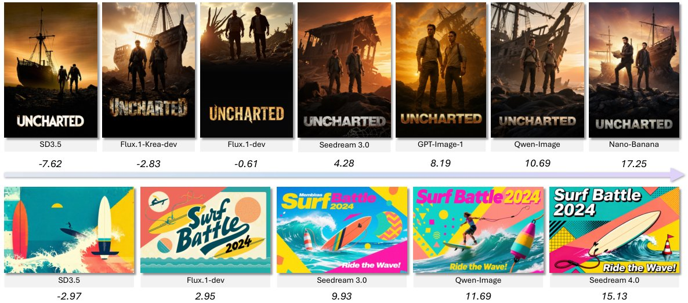
图 1：PosterReward。PosterReward 是面向海报生成任务的奖励模型。它从多个维度评估海报并输出分数，实现对平面设计质量的准确评估。
Poster creation is a quintessential application of graphic design, widely utilized in diverse fields such as film, commerce, and public service announcements. An effective poster requires not only a high-quality image but also accurate, aesthetically pleasing text and a well-composed layout. This multifaceted nature presents a significant challenge for image generation models. Merely producing a vivid image is insufficient; the ability to render text accurately and a sophisticated understanding of layout and composition demand more comprehensive capabilities from the model.
海报创作是平面设计的典型应用，广泛用于影视、商业、公益广告等诸多领域。一张合格的海报不仅需要高质量的图像，还需要准确美观的文字与精心编排的版式。这种多维属性给图像生成模型带来了严峻挑战：仅生成一张鲜活的图像远远不够，准确渲染文字以及对布局与构图的精细理解，都要求模型具备更为全面的能力。
Recently, the text rendering capabilities of advanced text-to-image models, such as Flux[20], PosterCraft[5], Seedream[10, 37], Qwen-Image[47] and HunyuanImage 3.0[4], have seen substantial improvements, paving the way for high-quality poster generation. However, existing evaluation models, like HPSv3 [31] and UnifiedReward[45], remain focused on assessing general image preferences and have not been optimized for graphic design content. One primary reason for this is the scarcity of preference datasets tailored to graphic design. For instance, in the largest available dataset, HPDv3[31], the content is predominantly composed of characters (29.4%), architecture (18.9%), and art (18.2%), with design accounting for only 9.9%. This absence of a dedicated poster evaluation model also impedes the potential for further targeted optimization of generative models through reinforcement learning post-training. Methods such as Flow-GRPO[29], Pref-GRPO[44], and Diffusion-NFT[59] all depend on a reliable reward model to provide the necessary optimization signals.
近来，Flux[20]、PosterCraft[5]、Seedream[10, 37]、Qwen-Image[47] 与 HunyuanImage 3.0[4] 等先进文生图模型的文字渲染能力大幅提升，为高质量海报生成铺平了道路。然而，HPSv3[31]、UnifiedReward[45] 等现有评估模型仍停留在通用图像偏好的评估上，并未针对平面设计内容做优化。造成这一点的主要原因是面向平面设计的偏好数据集十分稀缺。例如，在现有规模最大的数据集 HPDv3[31] 中，内容以人物（29.4%）、建筑（18.9%）与艺术（18.2%）为主，设计类仅占 9.9%。专用海报评估模型的缺位，也阻碍了通过强化学习后训练对生成模型做进一步定向优化的可能：Flow-GRPO[29]、Pref-GRPO[44] 与 Diffusion-NFT[59] 等方法都依赖可靠的奖励模型来提供优化信号。
To address these issues, we first design a reliable preference data collection framework and introduce the Poster-Preference-70K dataset. Unlike traditional methods[18, 54, 31] that rely on manual human annotation, our framework is fully automated, leveraging existing reward models, multimodal models, and Multimodal Large Language Models (MLLMs) to generate annotations, using AI-generated preferences as a proxy for human judgments. Our experiments demonstrate that this framework can accurately annotate image preferences while maintaining a high degree of consistency with human evaluators.
针对上述问题，我们首先设计了一套可靠的偏好数据采集框架，并提出 Poster-Preference-70K 数据集。与依赖人工标注的传统方法[18, 54, 31]不同，我们的框架完全自动化，利用已有的奖励模型、多模态模型与多模态大语言模型（MLLM）生成标注，以 AI 生成的偏好作为人类判断的代理。实验表明，该框架既能准确标注图像偏好，又与人类评估者保持高度一致。
The inherent complexity of posters necessitates evaluation across multiple dimensions. Accordingly, we define a five-dimensional evaluation system: Foundational Visual Quality, AI Artifacts, Textual Accuracy, Prompt Fidelity, and Aesthetic Value. While these dimensions are analytically distinct, they are intricately coupled in the final preference judgment and cannot be reduced to a simple weighted average. This interdependence requires a superior poster reward model to be capable of analyzing these dimensions holistically, weighing their respective trade-offs to produce a well-reasoned overall score.
海报本身的复杂性决定了评估必须覆盖多个维度。为此，我们定义了五维评估体系：基础视觉质量、AI 伪影、文本准确性、提示词保真度与美学价值。这些维度在分析上彼此独立，却在最终偏好判断中紧密耦合，无法简化为简单的加权平均。这种相互依存关系要求优秀的海报奖励模型能够整体性地分析各维度，权衡彼此的取舍，从而给出有理有据的综合分数。
To imbue our reward model with this analytical capability, we develop distinct training strategies for different model architectures. For our generative reward model, PosterReward-Pairwise, we adapt the approach from RewardDance [49], training it to generate a binary judgment (Yes/No) followed by a Chain-of-Thought (CoT) that details the analysis across the five dimensions and the subsequent decision process. During inference, the preference scores for two images can be indirectly computed from the logits of the judgment token. To overcome the limitations of existing discriminative reward models, which often lack analytical depth and test-time scaling, we design the two-stage PosterReward model. This model features an analysis module that assesses an image along the five dimensions and explicitly provides this textual analysis as auxiliary information to a scoring module, thereby enhancing scoring accuracy. Furthermore, we design a multi-stage, cascaded training pipeline that unifies the training of both PosterReward-Pairwise and PosterReward.
为使奖励模型具备这种分析能力，我们针对不同模型架构设计了各自的训练策略。对于生成式奖励模型 PosterReward-Pairwise，我们沿用 RewardDance[49] 的思路，训练其先输出二值判断（Yes/No），再输出一段思维链（Chain-of-Thought, CoT），详述五个维度上的分析与后续决策过程；推理时，两张图像的偏好分数可由判断词元的 logits 间接算出。针对判别式奖励模型分析深度不足、缺乏测试时扩展能力的问题，我们设计了两阶段 PosterReward 模型：该模型包含一个分析模块，沿五个维度评估图像，并将文本分析显式提供给打分模块作为辅助信息，从而提升打分精度。此外，我们设计了多阶段级联训练流程，把 PosterReward-Pairwise 与 PosterReward 的训练统一起来。
Finally, to comprehensively benchmark the poster generation capabilities of existing models, we propose PosterBench, which evaluates the outputs of various models across multiple poster categories using our PosterReward model. Concurrently, to assess the accuracy of existing reward models and MLLMs on the task of poster evaluation, we construct PosterRewardBench, which leverages human-annotated preferences for benchmarking. Experimental results confirm that PosterReward delivers highly accurate preference judgments for posters, outperforming all current reward models and MLLMs.
最后，为全面衡量现有模型的海报生成能力，我们提出 PosterBench，用 PosterReward 评估各模型在多个海报类别上的输出。同时，为衡量现有奖励模型与 MLLM 在海报评估任务上的准确性，我们构建了 PosterRewardBench，以人工标注的偏好作为评测基准。实验结果表明，PosterReward 对海报的偏好判断高度准确，优于当前所有奖励模型与 MLLM。
Our main contributions are as follows:
本文的主要贡献如下：
We introduce the first fully automated preference data collection framework capable of constructing a reliable AI-driven poster preference dataset from unlabeled raw data. This framework significantly reduces the cost of human annotation and offers a blueprint for data collection in other specialized domains.
• 提出首个全自动化偏好数据采集框架，可从无标注原始数据中构建可靠的 AI 驱动海报偏好数据集。该框架大幅降低了人工标注成本，也为其他专门领域的数据采集提供了范本。
We design a cascaded, multi-stage reward model post-training pipeline. Centered on multi-dimensional image analysis, it integrates the training of both generative and discriminative reward models, achieving synergistic optimization between these tasks.
• 设计了级联多阶段奖励模型后训练流程。该流程以多维图像分析为核心，统一了生成式与判别式奖励模型的训练，使两项任务实现协同优化。
We propose PosterReward, the first reward model specifically dedicated to evaluating the quality of generated posters. We also provide several variants to accommodate different use cases.
• 提出 PosterReward，首个专门用于评估生成海报质量的奖励模型，并提供多个变体以适配不同应用场景。
We introduce two new benchmarks: PosterBench, to measure the performance of text-to-image models on the poster generation task, and PosterRewardBench, to evaluate the accuracy of existing models on poster assessment.
• 提出两个新基准：PosterBench 用于衡量文生图模型在海报生成任务上的表现，PosterRewardBench 用于评估现有模型在海报评估上的准确性。
Reward models can be broadly categorized into pointwise and pairwise approaches, with pointwise models being the dominant paradigm. A pointwise reward model takes an image and its prompt as input and outputs a scalar score assessing the image quality. These models can be further divided into two structural subtypes.
奖励模型大致可分为逐点（pointwise）与成对（pairwise）两类，其中逐点模型是主流范式。逐点奖励模型以图像及其提示词为输入，输出衡量图像质量的标量分数。这类模型又可细分为两种结构子类型。
Regressive Reward Modeling. This category, often referred to as discriminative reward modeling, directly outputs a scalar score. Early methods were typically built on CLIP[36] or its variants, computing image–text quality via cosine similarity, as exemplified by ClipScore[15], PickScore[18], HPSv2[51], and ImageReward[54]. InstructGPT[33] later introduced a simple regression head that replaces the final language-model layer, shifting the output from logits to a scalar value for RLHF preference alignment. This design was quickly adopted by multimodal reward models, including IXC-2.5-Reward[57], Skywork-vl Reward[42], and BaseReward[58], and was extended to visual generation assessment by VideoScore[14]. The recent HPSv3[31] also employs this architecture and achieves state-of-the-art results across multiple benchmarks. All these models are trained on large-scale, human-annotated preference pairs using the Bradley–Terry loss[1].
回归式奖励建模。这一类通常称为判别式奖励建模，直接输出标量分数。早期方法多基于 CLIP[36] 及其变体，通过余弦相似度计算图文质量，代表工作有 ClipScore[15]、PickScore[18]、HPSv2[51] 与 ImageReward[54]。InstructGPT[33] 随后引入一个简单的回归头替代语言模型最后一层，把输出由 logits 变为标量，用于 RLHF 偏好对齐。这一设计很快被多模态奖励模型采用，包括 IXC-2.5-Reward[57]、Skywork-vl Reward[42] 和 BaseReward[58]，并被 VideoScore[14] 扩展到视觉生成评估。近期的 HPSv3[31] 同样采用该架构，在多个基准上取得了当前最优结果。这些模型均在大规模人工标注偏好对上用 Bradley–Terry 损失[1]训练。
Generative Reward Modeling. This paradigm reframes reward prediction as a token-generation task, naturally aligning with VLM pre-training. It has been widely used in visual-generation reward models as well as Image Quality Assessment (IQA) and Image Aesthetics Assessment (IAA). One line of work fine-tunes a VLM to output the score as a text string that is later parsed into a numerical value, as done in UnifiedReward[45, 43], EditScore[30], Q-Insight[24], VisualQuality-R1[50], and Next Token Is Enough[23]. A more flexible alternative derives the reward from the model’s logits over predefined categorical choices: the VLM evaluates the image using these categories, and the resulting probability distribution is mapped to a final score. Representative examples include RewardDance[49], VQA-score[27], Q-Align[48], DeQA-Score[56], SnowMaster[21], and Artimuse[3].
生成式奖励建模。该范式把奖励预测重构为词元生成任务，天然契合 VLM 的预训练形式，广泛用于视觉生成奖励模型以及图像质量评估（IQA）与图像美学评估（IAA）。一类工作微调 VLM 以文本串形式输出分数，之后再解析为数值，如 UnifiedReward[45, 43]、EditScore[30]、Q-Insight[24]、VisualQuality-R1[50] 与 Next Token Is Enough[23]。另一类更灵活的做法是从模型在预定义类别选项上的 logits 推导奖励：VLM 依据这些类别评估图像，再将所得概率分布映射为最终分数，代表工作包括 RewardDance[49]、VQA-score[27]、Q-Align[48]、DeQA-Score[56]、SnowMaster[21] 与 Artimuse[3]。
A pairwise reward model takes two images as input and outputs either individual scores or their relative ranking. This paradigm was first introduced to visual generation by UnifiedReward[45]. The series has since evolved: UnifiedReward 2.0 evaluates multiple dimensions of the two images separately, while UnifiedReward-think[43] improves performance through post-training techniques such as Chain-of-Thought, rejection sampling, and reinforcement learning. More recently, RewardDance[49] explores the scaling potential of pairwise RMs. The paradigm has also expanded to new domains, with OneReward[11] adapting it to image editing by using a single model to support multiple editing tasks.
成对奖励模型以两张图像为输入，输出各自的分数或二者的相对排序。该范式由 UnifiedReward[45] 首次引入视觉生成领域，此后不断发展：UnifiedReward 2.0 分别评估两张图像的多个维度；UnifiedReward-think[43] 借助思维链、拒绝采样与强化学习等后训练技术提升性能；RewardDance[49] 近期探索了成对奖励模型的扩展潜力。该范式还拓展到新的领域，OneReward[11] 用单一模型支持多种编辑任务，将其适配到图像编辑。
The performance of reward models is closely tied to the scale and quality of the preference datasets used for training. In visual generation, several key datasets have been developed to capture human preferences. Early human-annotated datasets such as HPDv1[52], ImageRewardDB[54], and Pick-a-Pic[18] focused on pairwise comparisons between images generated from the same prompt, primarily evaluating outputs from existing models. HPDv2[51] expanded the data diversity by incorporating images from a broader set of generative models. HPDv3[31] further scales this effort, providing a wide-spectrum text-to-image preference dataset with 1.08M text–image pairs and 1.17M annotated comparisons, combining outputs from many state-of-the-art models with high-quality real images. Traditional human annotation incurs substantial time and labor costs. With the growing capabilities of advanced models, some works[53] have explored MLLM-based automated evaluation, but methods like multi-image ranking demand strong model capabilities and can introduce positional bias, limiting their suitability for today’s complex, high-quality visual content. To address these challenges, recent efforts such as Skywork-Reward-V2[28] explore more robust human–AI synergistic preference evaluation with LLM assistance.
奖励模型的性能与训练所用偏好数据集的规模与质量密切相关。视觉生成领域已构建若干关键数据集来刻画人类偏好。早期的人工标注数据集如 HPDv1[52]、ImageRewardDB[54] 与 Pick-a-Pic[18]，关注同一提示词生成图像之间的成对比较，主要评估已有模型的输出。HPDv2[51] 纳入更多生成模型的图像，扩充了数据多样性。HPDv3[31] 进一步扩大了规模，提供了包含 1.08M 图文对与 1.17M 标注比较的宽谱文生图偏好数据集，融合众多当前最优模型的输出与高质量真实图像。传统人工标注耗费大量时间与人力。随着模型能力增强，已有工作[53]探索了基于 MLLM 的自动评估，但多图排序这类方法对模型能力要求高，且会引入位置偏差，难以适配当今复杂的高质量视觉内容。为应对这些挑战，Skywork-Reward-V2[28] 等工作开始探索借助 LLM 的、更稳健的人机协同偏好评估。
Automatic graphic design evaluation has transitioned from handcrafted heuristic metrics [34, 19] to foundation-model-driven approaches. Recent studies investigate the capability of Large Multimodal Models (LMMs) in assessing specific design principles [13] and aligning layout generation with human aesthetic preferences [35, 12]. However, these methodologies remain predominantly layout-centric, focusing on the geometric arrangement of elements while largely overlooking the intricate quality of textual rendering and global aesthetics.
自动平面设计评估已从手工启发式指标[34, 19]转向基础模型驱动的方法。近期研究考察了大型多模态模型（LMM）在评估特定设计原则[13]以及使布局生成与人类美学偏好对齐[35, 12]方面的能力。然而，这些方法仍以布局为中心，聚焦元素的几何排布，很大程度上忽视了文字渲染的精细质量与整体美学。
While recent agentic frameworks [32] attempt multi-faceted assessment, they often rely on decoupled agents that provide fragmented feedback, struggling to capture the holistic synergy between structure, typography, and visual beauty. In contrast, our PosterReward introduces a unified evaluation paradigm. By integrating structural layout, text-rendering accuracy, and aesthetic expression into a single balanced score, PosterReward provides a comprehensive reward signal. This multidimensional fusion allows for a more rigorous optimization of overall design quality than existing layout-only or fragmented evaluation schemes.
尽管近来的智能体框架[32]尝试做多面评估，但它们往往依赖相互解耦的智能体，给出的反馈碎片化，难以刻画结构、字体排印与视觉美感之间的整体协同。相比之下，本文的 PosterReward 引入了统一的评估范式，把结构布局、文字渲染精度与美学表达融合为一个均衡分数，提供全面的奖励信号。这种多维融合使得对整体设计质量的优化比现有纯布局或碎片化评估方案更为严格。
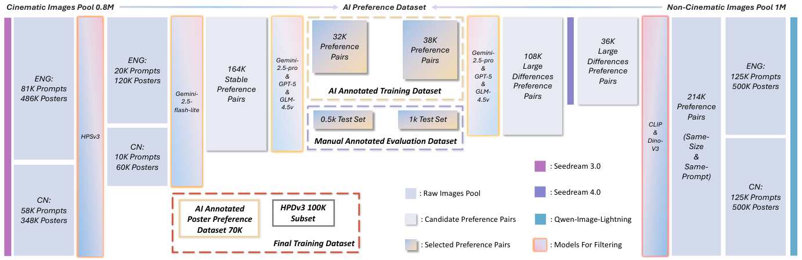
图 2：AI 偏好数据采集示意图。原始数据由 Seedream 3.0、Seedream 4.0 与 Qwen-Image-Lightning 生成。所用模型包括四个开源模型：CLIP、DINOv3、HPSv3、GLM-4.5v，以及三个闭源模型：Gemini-2.5-Flash-Lite、Gemini-2.5-Pro 与 GPT-5。
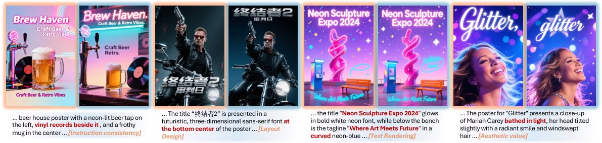
图 3：AI 偏好数据样本示意图。每组图像中，左侧为被选中的样本，右侧为被拒绝的样本。下方提示词区域末尾的橙色框标出了构建该偏好对所用的维度。
Existing human preference datasets in the visual generation domain, such as Pick-a-Pic[18], ImageReward[54], and HPDv3[31], predominantly feature preference data for a broad spectrum of generated images, including paintings and photographs. However, graphic design content is significantly underrepresented. To address this gap, we constructe the Poster-Preference-70K dataset, which focuses specifically on graphic design preferences.
视觉生成领域现有的人类偏好数据集，如 Pick-a-Pic[18]、ImageReward[54] 与 HPDv3[31]，其偏好数据主要面向绘画、照片等广泛类型的生成图像，平面设计内容的占比明显不足。为弥补这一缺口，我们构建了 Poster-Preference-70K 数据集，专门聚焦平面设计偏好。
Traditional human preference data collection is slow, expensive, and requires extensive annotator training to ensure quality. With the rapid advancement of Multimodal Large Language Models (MLLMs), the “MLLM-as-a-judge” paradigm has been widely adopted across various domains. This leads us to investigate the feasibility of using MLLMs to replace human annotators in building a reliable AI-judged preference dataset.
传统人类偏好数据采集速度慢、成本高，且需要对标注者进行大量培训以保证质量。随着多模态大语言模型（MLLM）的快速发展，「MLLM 即评判者」范式已在诸多领域得到广泛采用。这促使我们研究用 MLLM 替代人类标注者、构建可靠的 AI 判定偏好数据集的可行性。
We propose an automated framework for constructing preference data. As illustrated in Figure 2, This framework leverages several advanced multimodal models and reward models to generate high-quality AI-judged preferences from unlabeled raw data. Specifically, for two distinct sample pools—cinematic and non-cinematic—we design separate pipelines for initial filtering and preference pairing. Both pipelines culminate in a unified multi-model selection framework for final preference pair validation. The overall pipeline architecture is illustrated in Figure 2. For preference samples, please refer to Figure 3. The left part of the figure depicts the pipeline for cinematic images. The initial data pool contains 0.8 million movie poster images generated by Seedream 3.0[10] from 81K English and 58K Chinese prompts, with each prompt yielding six images. For non-cinematic content, which includes various commercial and public service graphic designs, the data pool comprises images generated by Qwen-Image-Lightning[47] from 125k English and 125k Chinese prompts respectively, with four images per prompt. To manage these large-scale data pools efficiently, we adopt a cascaded-model approach to reduce construction costs while ensuring the reliability of the final dataset.
我们提出了一个自动化偏好数据构建框架。如图 2 所示，该框架借助多个先进的多模态模型与奖励模型，从无标注原始数据中生成高质量的 AI 判定偏好。具体而言，针对影视类与非影视类两个不同的样本池，我们分别设计了初始筛选与偏好配对的流程，两条流程最后汇入统一的多模型选择框架，完成偏好对的最终校验。整体流程架构见图 2，偏好样本见图 3。图中左侧描绘影视类图像的处理流程：初始数据池包含由 Seedream 3.0[10] 根据 81K 条英文与 58K 条中文提示词生成的 80 万张电影海报图像，每条提示词生成六张图像。非影视类内容涵盖各类商业与公益平面设计，其数据池包含 Qwen-Image-Lightning[47] 根据 12.5 万条英文与 12.5 万条中文提示词生成的图像，每条提示词生成四张图像。为高效处理如此大规模的样本池，我们采用级联模型策略，在控制构建成本的同时保证最终数据集的可靠性。
Cinematic Data. For the cinematic poster data, we observe that it contains a large proportion of portraits and exhibits distinct aesthetic styles, which aligns well with the training data of HPSv3[31]. Consequently, we chose HPSv3 to score each image in the first filtering stage. To ensure the reliability of these preferences, we employ Kendall’s Coefficient of Concordance (Kendall’s ) [17] to quantify the consistency across the six ranking iterations, treating each round as a pseudo-rater. We select the top 20k English and 10k Chinese prompt groups with the highest values, representing the most stable model consensus. From these 30k groups, 450k potential preference pairs could be formed. As directly processing this volume would be resource-intensive, we introduce an intermediate step using a lightweight, closed-source model to perform multiple rankings. In our implementation, we perform six ranking iterations and selected pairs where the relative order was consistent in at least five of them. This process yields 164k candidate pairs for the final multi-model filtering stage.
影视类数据。我们观察到影视类海报数据中人像占比很高，且具有鲜明的美学风格，与 HPSv3[31] 的训练数据高度契合。因此，在第一轮筛选中选用 HPSv3 为每张图像打分。为保证偏好的可靠性，我们采用 Kendall 和谐系数（Kendall's ）[17] 量化六轮排序之间的一致性，把每一轮排序视为一个伪评分者。我们选取 值最高的 2 万组英文与 1 万组中文提示词分组，它们代表模型共识最稳定的部分。从这 3 万组中可组合出 45 万个候选偏好对。直接处理如此大的数据量开销过高，因此我们引入一个中间步骤：用一个轻量的闭源模型执行多轮排序。实现中我们进行六轮排序，保留其中至少五轮相对次序一致的配对，最终得到 16.4 万个候选偏好对，进入多模型筛选阶段。
Non-Cinematic Data. For the non-cinematic images, which generated by Qwen-Image-Lightning could have inconsistent dimensions, we first filter for pairs with identical dimensions, resulting in 214k candidate pairs. Since these images often exhibit low variance, we implement a subsequent filtering step to ensure significant dissimilarity within each selected pair, using both CLIP[36] and DINOv3[40]. CLIP assesses semantic similarity, while DINOv3 focuses on structural similarity. We select the union of the top 15k most dissimilar pairs according to DINOv3 and the top 25k according to CLIP, yielding 36k high-variance pairs. As this quantity was insufficient, we expand the dataset with 36k high-quality poster images generated by Seedream 4.0 [37] from which we form 108k new candidate pairs.
非影视类数据。由 Qwen-Image-Lightning 生成的非影视类图像尺寸可能不一致，我们先筛出尺寸相同的配对，得到 21.4 万个候选对。由于这些图像之间差异往往较小，我们随后增加了一道筛选步骤，用 CLIP[36] 与 DINOv3[40] 确保每个入选配对内部存在显著差异：CLIP 衡量语义相似度，DINOv3 侧重结构相似度。我们取 DINOv3 判定差异最大的前 1.5 万对与 CLIP 判定差异最大的前 2.5 万对的并集，得到 3.6 万高差异配对。由于数量不足，我们又用 Seedream 4.0[37] 生成 3.6 万张高质量海报图像加以扩充，并从中组合出 10.8 万个新的候选对。
Multi-Model Filtering. For the final preference pair validation, to mitigate single-model bias, we employ a panel of three state-of-the-art MLLMs: Gemini-2.5-Pro[6], GPT-5, and GLM-4.5v[41]. These models jointly select reliable preference pairs via pairwise comparison. During this process, we observe that current MLLMs exhibit a significant positional bias, where they tend to favor the first image presented over the second (see Table 2). To counteract this bias, we prompt each model with every pair twice, swapping the image order for the second evaluation.
多模型筛选。在偏好对的最终校验环节，为缓解单一模型的偏差，我们组建了由三个当前最优 MLLM 组成的评审团：Gemini-2.5-Pro[6]、GPT-5 与 GLM-4.5v[41]，通过成对比较共同挑选可靠的偏好对。在这一过程中，我们发现当前 MLLM 存在明显的位置偏差，倾向于偏爱先呈现的第一张图像（见表 2）。为抵消该偏差，我们对每个配对提示模型两次，第二次评估时交换图像顺序。
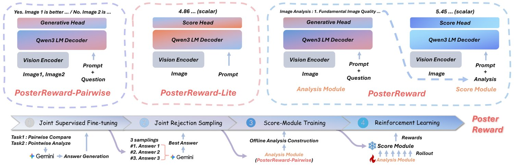
图 4：PosterReward 训练流程与模型结构图。上方是三种不同结构的奖励模型，下方是训练流程。我们的训练流程由四个级联阶段组成：联合监督微调、联合拒绝采样、打分模块训练与强化学习。
Pointwise models offer flexibility and have been widely applied in reinforcement learning for image generation. Generative pointwise models typically follow two main approaches: regressing scores directly from labeled data [45] or indirectly calculating scores from logits [49]. The former is susceptible to annotator bias and incurs high labeling costs. The latter, which relies on human-defined labels, often fails to align impartially with real-world image distributions, leading to annotation bias [56]. We contend that the optimal solution is a discriminative pointwise reward model, a methodology whose reliability has been validated in the LLM and VLM domains. However, existing discriminative models often lack interpretability and cannot improve performance via test-time scaling, as they rely solely on their intrinsic understanding.
逐点模型灵活性强，在图像生成强化学习中应用广泛。生成式逐点模型通常有两条技术路线：直接从标注数据回归分数[45]，或从 logits 间接计算分数[49]。前者易受标注者偏差影响且标注成本高；后者依赖人工定义的标签，往往无法与真实图像分布无偏对齐，从而引入标注偏差[56]。我们认为最优方案是判别式逐点奖励模型，这一路线的可靠性已在 LLM 与 VLM 领域得到验证。然而，现有判别式模型往往缺乏可解释性，只能依靠自身的内在理解，无法通过测试时扩展提升性能。
By inheriting the complete architecture of VLMs, pairwise reward models can leverage techniques such as Chain-of-Thought (CoT) and reinforcement fine-tuning to enhance performance [43, 49]. They also exhibit greater interpretability and potential for scaling [49], making them well-suited for tasks like preference data filtering. Nevertheless, their application in RL-based fine-tuning for image generation is limited by the high computational cost of performing pairwise comparisons across numerous samples.
成对奖励模型完整继承了 VLM 架构，可以借助思维链（CoT）与强化微调等技术提升性能[43, 49]，也具有更强的可解释性与扩展潜力[49]，非常适合偏好数据筛选这类任务。但在图像生成的强化学习微调中，对大量样本做两两比较的计算开销过高，限制了其应用。
To address the distinct advantages and limitations of each model type, we design a cascaded training pipeline focused on image analysis. This pipeline integrates a discriminative model, PosterReward, and a pairwise model, PosterReward-Pairwise.
针对两类模型各自的优势与局限，我们设计了一条以图像分析为核心的级联训练流程，把判别式模型 PosterReward 与成对模型 PosterReward-Pairwise 整合在一起。
PosterReward. We design a novel two-stage discriminative reward model that incorporates image analysis and test-time scaling capabilities. An image and its corresponding prompt are first fed into a first-stage analysis module, fine-tuned from Qwen3-VL-8B[55], which generates a multi-dimensional analysis. Subsequently, the image, the analysis text, and the prompt are passed to a second-stage scoring module. For this module, we follow the suggestion from BaseReward [58] by replacing the final layer of Qwen3-VL-8B with a two-layer MLP, connected by a SiLU activation, to output a final scalar score.
PosterReward。我们设计了一种新颖的两阶段判别式奖励模型，兼具图像分析与测试时扩展能力。图像及其对应提示词首先输入第一阶段的分析模块（由 Qwen3-VL-8B[55] 微调而来），生成多维分析文本；随后，图像、分析文本与提示词一起送入第二阶段的打分模块。该模块沿用 BaseReward[58] 的建议，把 Qwen3-VL-8B 的最后一层替换为两层 MLP，中间以 SiLU 激活连接，输出最终标量分数。
PosterReward-Lite. A simplified variant of PosterReward, which omits the analysis module for inference scenarios where computational speed is critical.
PosterReward-Lite。PosterReward 的简化变体，去掉分析模块，适用于对推理速度要求苛刻的场景。
PosterReward-Pairwise. This generative reward model is fine-tuned entirely from Qwen3-VL-8B. Following the methodology of RewardDance [49], we train the model to first make a preference judgment and then output its CoT reasoning. This approach prevents the corruption of the logits distribution that can occur when the judgment is produced after the reasoning process [25]. During inference, the full CoT can be omitted to accelerate processing.
PosterReward-Pairwise。该生成式奖励模型完全基于 Qwen3-VL-8B 微调。遵循 RewardDance[49] 的方法，我们训练模型先给出偏好判断再输出 CoT 推理。这样可以避免先推理后判断时可能出现的 logits 分布被破坏的问题[25]。推理时可省略完整 CoT 以加速。
We propose a unified training pipeline composed of four cascaded stages: Joint Supervised Fine-Tuning, Joint Rejection Sampling Fine-Tuning, Scoring Module Training, and Reinforcement Learning Fine-Tuning.
我们提出由四个级联阶段组成的统一训练流程：联合监督微调、联合拒绝采样微调、打分模块训练与强化学习微调。
Joint Supervised Fine-Tuning. We use Gemini-2.5-Pro[6] to annotate our raw data for two joint tasks:
联合监督微调。我们使用 Gemini-2.5-Pro[6] 为原始数据标注两项联合任务：
Single-Image Analysis: The model is prompted to provide a comprehensive and objective evaluation of an image from multiple dimensions.
(1) 单图分析：要求模型从多个维度对图像给出全面、客观的评估。
Paired-Image Comparison: The model is required to first state its preference between two images based on the same dimensions, and then provide a detailed CoT for its decision. Notably, we randomly swapped the positions of the “chosen” and “rejected” images to ensure a balanced distribution of “Yes” and “No” responses. This strategy can balance the number of the two types of responses and reduce the inherent position bias of the model.
(2) 成对图像比较：要求模型先依据同样的维度给出对两张图像的偏好，再给出详细的决策思维链。我们随机交换「选中」与「拒绝」图像的位置，使「Yes」与「No」两类回答分布均衡。这一策略既能平衡两类回答的数量，也能缓解模型固有的位置偏差。
We have collected 246k single-image analysis samples and 160k paired-preference samples to fine-tune Qwen3-VL-8B. We posit that these two tasks are intrinsically linked: learning to judge image quality enhances the model’s analytical capabilities, while a comprehensive analysis enables more accurate preference judgments.
我们收集了 24.6 万条单图分析样本与 16 万条成对偏好样本用于微调 Qwen3-VL-8B。我们认为这两项任务内在相通：学会判断图像质量会增强模型的分析能力，而全面的分析又能带来更准确的偏好判断。
Joint Rejection Sampling Fine-Tuning. From the SFT-tuned model, we sample three distinct responses for each prompt across both tasks. We then use Gemini-2.5-Flash-Lite[6] to select the highest-quality response for rejection sampling fine-tuning. For cases where the SFT model made an incorrect preference judgment, we replace the chosen response with the original ground-truth response from Gemini-2.5-Pro. This stage further enhances the model’s output quality. The resulting model, which excels at both paired comparison and single-image analysis, serves as the final PosterReward-Pairwise model and the initial analysis module for the fourth stage.
联合拒绝采样微调。在监督微调后的模型上，我们对两项任务的每个提示词各采样三条不同回复，再用 Gemini-2.5-Flash-Lite[6] 挑选质量最高的一条用于拒绝采样微调。对于监督微调模型偏好判断出错的样本，我们用 Gemini-2.5-Pro 的原始真值回复替换被选中的回复。该阶段进一步提升了模型的输出质量。所得模型在成对比较与单图分析两项任务上均表现优异，既作为最终的 PosterReward-Pairwise 模型，也作为第四阶段分析模块的初始化。
Scoring Module Training. In this stage, we utilize the model from the second stage to re-annotate the analysis texts within our preference dataset. Subsequently, the scoring module is trained on preference pairs, where each training instance is formulated as a triplet. Formally, we denote the triplets for the chosen (winning) and rejected (losing) samples as and , respectively:
打分模块训练。在这一阶段，我们用第二阶段的模型对偏好数据集中的分析文本重新标注。随后在偏好对上训练打分模块，每个训练样本构成一个三元组。形式化地，我们把选中（胜出）样本与拒绝（落败）样本的三元组分别记为 与 ：
| (1) |
where and represent the chosen and rejected images, is the shared prompt, and denote their corresponding analysis texts. The training process is optimized using the Bradley-Terry loss function:
其中 与 表示选中图像与拒绝图像， 是共用的提示词， 表示各自对应的分析文本。训练过程采用 Bradley-Terry 损失函数优化：
| (2) |
Reinforcement Learning. In the final stage, we fine-tune the analysis module using Group Relative Policy Optimization (GRPO)[38], with the frozen scoring module acting as the reward function. This process enhances the quality of the generated analysis texts.
强化学习。最后一个阶段，我们用组相对策略优化（GRPO）[38] 微调分析模块，并把冻结的打分模块作为奖励函数，从而提升生成分析文本的质量。
First, we define a reward for each sample based on its preference status. For a chosen (winning) sample, the reward is the score from the scoring module; for a rejected (losing) sample, it is the negative of the score:
首先，我们根据样本的偏好状态为每个样本定义奖励 。对于选中（胜出）样本，奖励为打分模块给出的分数；对于拒绝（落败）样本，奖励为该分数的相反数：
| (3) |
This reward is then normalized across the batch to compute the advantage , which represents the relative quality of the analysis:
随后将该奖励在批内做归一化，得到优势 ，它表示分析的相对质量：
| (4) |
where is the vector of rewards for all samples in the batch.
其中 是批内所有样本奖励构成的向量。
With the advantage defined, we optimize the analysis model using the GRPO objective. The objective function incorporates a clipped surrogate objective using the probability ratio to stabilize training, along with a KL divergence penalty to regularize the policy against a reference model . The final objective is:
优势定义好后，我们用 GRPO 目标优化分析模型 。该目标函数引入基于概率比 的截断替代目标以稳定训练，并加入 KL 散度惩罚，使策略相对参考模型 保持正则化。最终目标为：
| (5) | ||||
This GRPO process encourages the analysis module to produce descriptions that align better with the scoring module’s criteria, leading to a more robust final PosterReward model.
这一 GRPO 过程促使分析模块生成更贴合打分模块判据的描述，使最终的 PosterReward 模型更加稳健。
Summary of the Pipeline. In essence, our pipeline leverages image analysis to synergistically enhance both reward models. Joint training with analytical tasks directly increases the performance of PosterReward-Pairwise, while the explicit integration of the refined analysis module significantly improves the scoring quality of PosterReward.
流程小结。本质上，本流程借助图像分析协同增强两个奖励模型：联合分析任务训练直接提升了 PosterReward-Pairwise 的性能，而显式接入精调后的分析模块又显著改善了 PosterReward 的打分质量。
Experiments for the first three stages are conducted on eight A100 GPUs. In joint Supervised Fine-Tuning (SFT) and joint Rejection Sampling Fine-Tuning (RSFT), we employ full-parameter fine-tuning with a learning rate of . For the third stage, scoring module training, we utilize LoRA (rank 64) at the same learning rate. The fourth stage, GRPO fine-tuning, also employs LoRA (rank 64) with a learning rate of , utilizing 8 A100s for training, 8 for rollout, and 4 for reward model deployment. Further training details are provided in the supplementary materials.
前三个阶段的实验在 8 张 A100 GPU 上进行。联合监督微调（SFT）与联合拒绝采样微调（RSFT）采用全参数微调，学习率为 。第三阶段打分模块训练使用 LoRA（秩 64），学习率相同。第四阶段 GRPO 微调同样采用 LoRA（秩 64），学习率为 ，使用 8 张 A100 训练、8 张用于 rollout、4 张用于部署奖励模型。更多训练细节见补充材料。
PosterRewardBench is designed to measure the accuracy of existing MLLMs and reward models in evaluating poster preferences. We provide two benchmarks constructed using different models: PosterRewardBench-Basic and PosterRewardBench-Advanced. The former is generated by Flux, Flux-Krea, and SD3.5-L, exhibiting significant variations in average sample quality. The latter is generated by Seedream3.0[10], Seedream4.0[37], and Qwen-Image-Lightning[47], featuring higher overall quality and smaller quality differences among samples. All preference pairs were reviewed by four professional annotators, and only those with a consensus from at least three annotators were retained. For more detailed statistics, please refer to the supplementary materials. Furthermore, we test the models’ judgment capabilities on general image generation using the HPDv3[31] and MMRB2[16] benchmarks. For the pairwise evaluation of both reward models and MLLMs, we conduct separate assessments with swapped image positions to investigate potential positional bias.
PosterRewardBench 用于衡量现有 MLLM 与奖励模型在海报偏好评估上的准确性。我们提供由不同模型构建的两个基准：PosterRewardBench-Basic 与 PosterRewardBench-Advanced。前者由 Flux、Flux-Krea 与 SD3.5-L 生成，样本平均质量差异明显；后者由 Seedream3.0[10]、Seedream4.0[37] 与 Qwen-Image-Lightning[47] 生成，整体质量更高，样本间质量差异更小。所有偏好对均由四名专业标注人员审核，只保留至少三人达成一致的对。更详细的统计信息见补充材料。此外，我们还在 HPDv3[31] 与 MMRB2[16] 基准上测试模型在通用图像生成上的判断能力。对奖励模型与 MLLM 的成对评估，我们都交换图像位置分别测试，以考察潜在的位置偏差。
表 1：逐点奖励模型在各基准上的性能对比。所有数值均为准确率（）。PRB 是 PosterRewardBench 的缩写。
表 2：成对奖励模型在 PosterRewardBench（PRB）上的性能对比。「Yes」与「No」分别表示在真值标签为正和为负的样本上的准确率。所有数值均为准确率（）。
| PRB-Basic Acc. | PRB-Ad. Acc. | |||||
| Model | Yes | No | Avg. | Yes | No | Avg. |
| UnifiedReward-think[43] | 75.1 | 61.5 | 68.3 | 52.6 | 48.5 | 50.6 |
| Qwen3-VL-Plus[55] | 89.9 | 39.2 | 64.5 | 98.7 | 14.2 | 56.4 |
| Gemini-2.5-Flash[6] | 94.7 | 33.3 | 64.0 | 95.2 | 28.8 | 62.0 |
| Gemini-2.5-Pro[6] | 75.6 | 83.1 | 79.3 | 81.8 | 68.6 | 75.2 |
| GPT-5 | 90.4 | 80.5 | 85.4 | 89.8 | 75.9 | 82.9 |
| PosterReward-Pairwise | 82.0 | 84.0 | 83.0 | 84.1 | 83.6 | 83.8 |
Table 1 presents the comprehensive evaluation results. For UnifiedReward, we utilize the Qwen-7B version. Given that UnifiedReward produces a high frequency of ties in pointwise mode, we calculate its accuracy by treating each tie as half a correct prediction (), denoted as . The results demonstrate that the PosterReward series consistently achieves superior accuracy across various datasets. On PosterReward-Advanced, PosterReward attains an accuracy of 86.5%, which significantly surpasses existing baselines that mostly range between 40% and 53%. This indicates that previous reward models struggle to accurately evaluate high-quality, complex generated content. Moreover, PosterRewardBench-Basic constitutes out-of-distribution (OOD) poster data for PosterReward, yet it still achieves a leading accuracy of 86.7%, showcasing its strong robustness. Finally, on general text-to-image benchmarks including HPDv3 and the T2I sub-benchmark of MMRB2, PosterReward and its Lite version secure the highest accuracy among all pointwise models, confirming their excellent generalization capabilities.
表 1 给出了综合评估结果。对于 UnifiedReward，我们采用 Qwen-7B 版本。由于 UnifiedReward 在逐点模式下频繁给出平局，我们把每次平局计为半正确（，记作 ）来计算准确率。结果显示，PosterReward 系列在各数据集上一致取得最优准确率。在 PosterReward-Advanced 上，PosterReward 的准确率达 86.5%，显著超越多数处在 40%～53% 区间的现有基线，说明以往的奖励模型难以准确评估高质量、复杂的生成内容。此外，PosterRewardBench-Basic 对 PosterReward 而言属于分布外（OOD）海报数据，但它仍以 86.7% 的准确率领先，展现出很强的鲁棒性。最后，在 HPDv3 与 MMRB2 的 T2I 子基准等通用文生图基准上，PosterReward 及其 Lite 版本在所有逐点模型中准确率最高，验证了其出色的泛化能力。
In the pairwise model evaluation illustrated in Table 2, the jointly trained PosterReward-Pairwise model also exhibits robust performance, achieving the highest scores on PosterRewardBench-Advanced, and is second only to GPT-5 on PosterRewardBench-Basic. More importantly, PosterReward-Pairwise, which has been trained on a balanced dataset, demonstrates minimal positional bias in tests with varied image positions. In contrast, existing MLLMs and UnifiedReward exhibit a certain degree of positional bias.
表 2 的成对模型评估显示，联合训练的 PosterReward-Pairwise 同样表现稳健，在 PosterRewardBench-Advanced 上得分最高，在 PosterRewardBench-Basic 上仅次于 GPT-5。更重要的是，由于在均衡数据集上训练，PosterReward-Pairwise 在变换图像位置的测试中位置偏差极小；相比之下，现有 MLLM 与 UnifiedReward 都存在一定程度的位置偏差。
图 5：采用 MLLM 即评判者方法，通过 Gemini-3-flash 展示对分析模块的偏好分析。结果显示，SFT 模型显著优于基座模型，联合 SFT 与联合 RSFT 都带来了性能增益。我们对交换文本位置后的两次独立标注结果取平均，以消除位置偏差。
We first conduct ablation studies on the initial stages of our pipeline to validate the effectiveness of our training strategy. To provide a more human-aligned evaluation of the analysis module, we move beyond traditional reference-based metrics and employ an MLLM-as-a-judge approach. Specifically, we utilize Gemini-3-flash to conduct a pairwise preference analysis across different training stages. As illustrated in Figure 5, the fine-tuned models significantly outperform the base Qwen3-VL-8B model. Furthermore, the results demonstrate that both joint SFT and joint RSFT contribute to consistent performance gains, validating the synergy between tasks. To ensure evaluation fairness, we averaged results from two separate annotations with swapped text positions to eliminate position bias. The improvement in the pairwise preference judgment task was also directly assessed via preference accuracy, as presented in Table 3.
我们首先对流程的前几个阶段做消融实验，验证训练策略的有效性。为了对分析模块做更贴近人类的评估，我们放弃传统的基于参考的指标，转而采用 MLLM 即评判者的方法，用 Gemini-3-flash 在不同训练阶段之间做成对偏好分析。如图 5 所示，微调后的模型显著优于基座 Qwen3-VL-8B。结果还表明，联合 SFT 与联合 RSFT 都带来持续的性能增益，验证了任务之间的协同效应。为保证评估公平，我们对交换文本位置后的两次独立标注结果取平均，消除位置偏差。成对偏好判断任务上的提升也直接用偏好准确率衡量，见表 3。
Furthermore, we conduct ablation studies on the PosterReward training pipeline. The ablation results in Table 4 show that both the image analysis module and GRPO optimization contribute to consistent performance gains on the HPDv3 and PRB benchmarks. Notably, the accuracy improvements are more pronounced on the poster-related benchmarks (PRB-Basic and PRB-Advanced) compared to the general text-to-image dataset.
此外，我们对 PosterReward 的训练流程做了消融实验。表 4 的结果显示，图像分析模块与 GRPO 优化在 HPDv3 与 PRB 基准上都带来了持续的性能增益。相较通用文生图数据集，海报相关基准（PRB-Basic 与 PRB-Advanced）上的准确率提升更为明显。
表 3：PosterReward-pairwise 模型的消融实验。「Yes」与「No」指回答的真值标签。
| Advanced Acc. | Basic Acc. | |||||
| Method | Yes | No | Avg. | Yes | No | Avg. |
| SFT (Single) | 81.77 | 82.09 | 81.93 | 80.85 | 82.59 | 81.72 |
| SFT (Joint) | 82.09 | 83.32 | 82.71 | 80.08 | 83.75 | 81.92 |
| + RSFT (Single) | 82.67 | 83.24 | 82.96 | 80.66 | 83.56 | 82.11 |
| + RSFT (Joint) | 84.06 | 83.57 | 83.82 | 82.01 | 83.95 | 82.98 |
表 4：PosterReward 在关键基准上的消融实验，展示各组件的累积效果。所有数值均为准确率（）。
| Model / Component | HPDv3 | PRB-Basic | PRB-Ad |
| PosterReward-Lite | 77.1 | 83.9 | 85.0 |
| + Analysis | 77.5 | 85.7 | 85.8 |
| + Analysis + GRPO (PosterReward) | 77.8 | 86.7 | 86.0 |
We evaluate the effectiveness of PosterReward as a reward model for post-training image generation and provide visual comparisons against existing SOTA baselines. Specifically, we fine-tune Flux.1-dev and Qwen-Image utilizing Flow-GRPO[29]; the visual results are presented in figure 6 and figure 7, respectively. Furthermore, the performance of the SD3.5-M model fine-tuned via DiffusionNFT[59] is detailed in the supplementary material. Given that existing reward models lack the capability to evaluate Chinese prompts, we employ a training dataset consisting exclusively of English prompts. During inference, all parameter settings align with official recommendations, and the random seed is fixed at 0.
我们评估了 PosterReward 作为图像生成后训练奖励模型的有效性，并与现有最优基线做视觉对比。具体地，我们用 Flow-GRPO[29] 微调 Flux.1-dev 与 Qwen-Image，视觉结果分别见图 6 与图 7；用 DiffusionNFT[59] 微调的 SD3.5-M 模型的表现详见补充材料。鉴于现有奖励模型不具备评估中文提示词的能力，训练数据集全部使用英文提示词。推理时所有参数按官方推荐设置，随机种子固定为 0。
As illustrated in the figures, PosterReward simultaneously optimizes aesthetic appeal and enhances both the layout quality and text-rendering accuracy of graphic designs. In contrast, existing reward models exhibit a noticeable performance gap compared to PosterReward, as they lack the specialized capacity to perceive and evaluate textual and structural layout elements.
如图所示，PosterReward 在提升美感的同时，也改善了平面设计的版式质量与文字渲染精度。相比之下，现有奖励模型缺乏感知和评估文字与结构布局要素的专门能力，与 PosterReward 存在明显差距。
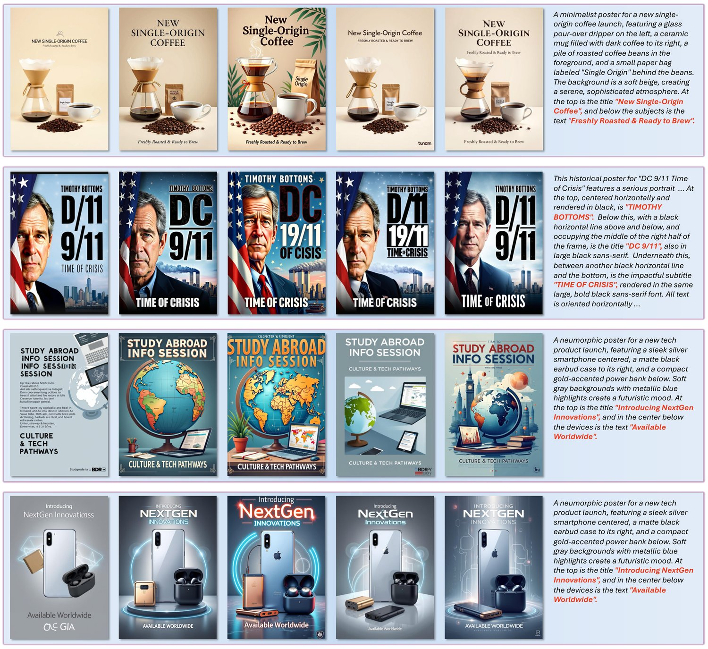
图 6：用不同奖励模型微调 Flux.1-dev 的视觉对比。从左至右各列依次为原始 Flux.1-dev，以及用 PosterReward、HPSv3、UnifiedReward 与 PickScore 微调后的模型输出。对应提示词置于右侧紫色框内。
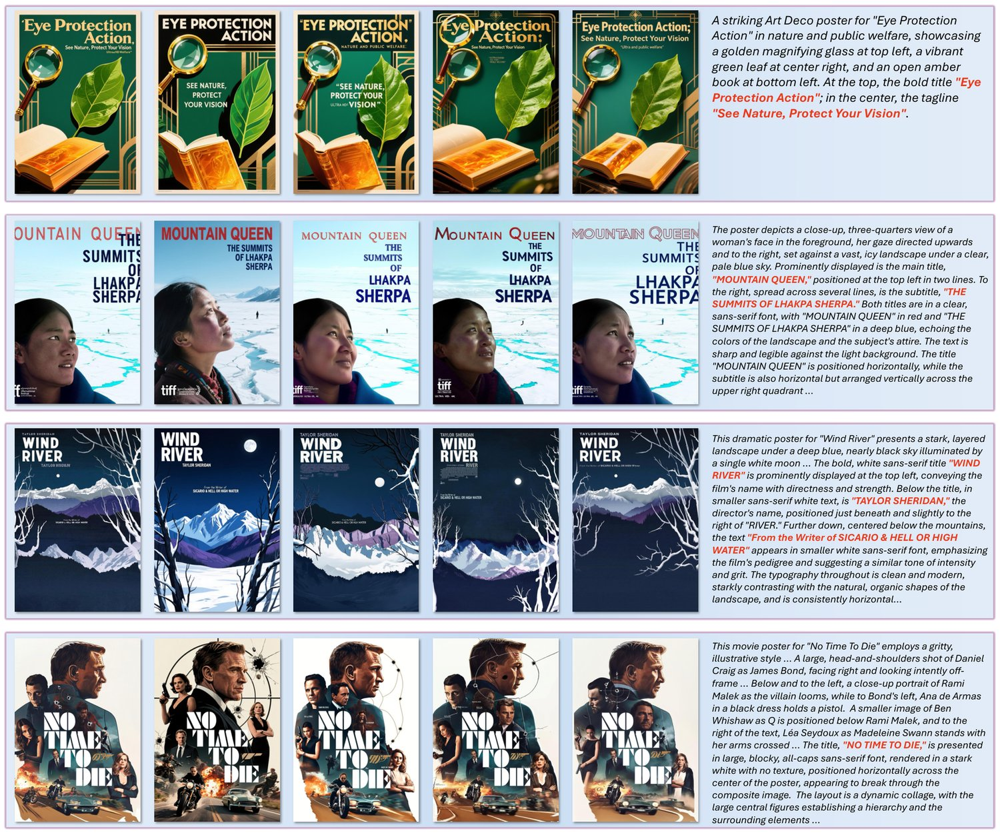
图 7：用不同奖励模型微调 Qwen-Image 的视觉对比。与上图一致，各列依次代表原始 Qwen-Image、PosterReward、HPSv3、UnifiedReward 与 Pickscore。对应提示词置于右侧紫色框内。
We introduce PosterBench, a benchmark designed to evaluate the performance of various image generation models on poster creation tasks using PosterReward. PosterBench comprises 250 distinct poster generation prompts, of which 100 are related to cinematic themes and 150 cover other diverse categories. To assess generation stability, we instruct each model to generate eight posters per prompt. We evaluate six state-of-the-art closed-source models (Nano-Banana-Pro, Seedream-4.5*, Nano-Banana, Seedream-4.0, GPT-Image-1, and Seedream-3.0) and seven representative open-source models (Qwen-Image-2512, Qwen-Image, Z-Image-Turbo, Flux.2-klein-9B, Flux.1-krea-dev, Flux.1-dev, and SD3.5-L). Notably, for Seedream-4.5*, which enforces a minimum resolution constraint, we generate images at a target 2K resolution and subsequently resize them to the standard benchmark resolution for evaluation.
我们提出 PosterBench，用 PosterReward 评估各图像生成模型在海报创作任务上的表现。PosterBench 包含 250 条不同的海报生成提示词，其中 100 条与影视主题相关，150 条覆盖其他多样类别。为评估生成稳定性，我们让每个模型对每条提示词生成八张海报。我们评估了六个当前最优的闭源模型（Nano-Banana-Pro、Seedream-4.5*、Nano-Banana、Seedream-4.0、GPT-Image-1 与 Seedream-3.0）和七个有代表性的开源模型（Qwen-Image-2512、Qwen-Image、Z-Image-Turbo、Flux.2-klein-9B、Flux.1-krea-dev、Flux.1-dev 与 SD3.5-L）。对于强制最低分辨率约束的 Seedream-4.5*，我们先按 2K 目标分辨率生成图像，再缩放到标准评测分辨率后进行评估。
表 5：各模型在 PosterBench 上的表现。Mean、Median 与 Bo8-Avg 分别为对应分数。Std-Avg 是各组标准差取平均，反映稳定性（越小越好）。
| Model | Mean | Median | Std-Avg | Bo8-Avg |
| Closed-Source Models | ||||
| Nano-Banana-Pro | 13.36 | 13.47 | 1.91 | 15.77 |
| Seedream-4.5* | 12.03 | 12.09 | 2.08 | 14.57 |
| Nano-Banana[8] | 11.60 | 11.69 | 2.17 | 14.49 |
| Seedream-4.0[37] | 11.46 | 11.44 | 2.06 | 13.93 |
| GPT-Image-1 | 11.16 | 11.38 | 1.75 | 13.43 |
| Seedream-3.0[10] | 5.01 | 5.13 | 3.66 | 9.75 |
| Open-Source Models | ||||
| Qwen-Image-2512[46] | 11.86 | 11.63 | 1.46 | 13.85 |
| Qwen-Image[46] | 7.69 | 7.72 | 2.55 | 11.06 |
| Z-Image-Turbo[2] | 7.65 | 7.31 | 2.18 | 10.47 |
| Flux.2-klein-9B[2] | 7.38 | 7.66 | 3.20 | 11.67 |
| Flux.1-krea-dev[22] | 5.00 | 5.14 | 3.59 | 9.58 |
| Flux.1-dev[20] | 2.55 | 2.42 | 3.85 | 7.81 |
| SD3.5-L[9] | -2.90 | -3.92 | 2.68 | 1.24 |
We evaluate the generated samples from each model based on several key metrics. To measure the average generation quality, we compute the mean and median scores. Std-Avg denotes the mean of the standard deviations calculated for each group, indicating stability (lower is better). Finally, to evaluate the model’s optimal performance across multiple trials, we use the Best-of-8 Average (Bo8-Avg) score, which is the mean of the highest-scoring sample from each set of eight generations.
我们从若干关键指标评估各模型生成的样本。为衡量平均生成质量，计算均值与中位数；Std-Avg 是各组标准差取平均，反映稳定性（越小越好）；为衡量模型在多次尝试中的最优表现，我们采用 Best-of-8 平均（Bo8-Avg）分数，即对每组八张生成图像取最高分样本的均值。
As shown in Table 5, Nano-Banana-Pro leads the overall benchmark, with Seedream-4.0 and 4.5 also demonstrating outstanding top-tier performance. While older closed-source models like Seedream 3.0 show limited capabilities in precise text rendering and layout generation, Qwen-Image-2512 establishes a dominant position in the open-source category. Notably, while a significant gap persists between most other open-source models (e.g., Qwen-Image, Z-Image-Turbo, and Flux.2-klein-9B) and leading closed-source solutions, Qwen-Image-2512 successfully achieve a performance level nearly on par with advanced closed-source models.
如表 5 所示，Nano-Banana-Pro 在总体榜单上领先，Seedream-4.0 与 4.5 也展现出顶尖水准。Seedream 3.0 等较早的闭源模型在精确文字渲染与布局生成上能力有限，而 Qwen-Image-2512 在开源类别中占据主导地位。尽管 Qwen-Image、Z-Image-Turbo、Flux.2-klein-9B 等多数开源模型与领先的闭源方案之间仍存在显著差距，Qwen-Image-2512 已成功达到接近先进闭源模型的水平。
We introduce PosterReward, the first reward model capable of accurately assessing the quality of generated posters. We begin by constructing an automated data collection pipeline to curate Poster-Preference-70K, a high-quality dataset of poster preferences derived from a large volume of raw data. Subsequently, we employ a multi-stage cascaded framework that leverages image analysis to enhance the performance of our reward models. We also propose PosterRewardBench and PosterBench, which establish new benchmarks for measuring the performance of reward models on poster evaluation tasks and the poster generation quality of image synthesis models.
我们提出 PosterReward，首个能够准确评估生成海报质量的奖励模型。我们首先构建了一条自动化数据采集流程，从海量原始数据中整理出高质量的海报偏好数据集 Poster-Preference-70K；随后采用多阶段级联框架，借助图像分析提升奖励模型的性能；还提出 PosterRewardBench 与 PosterBench，分别为衡量奖励模型在海报评估任务上的表现、以及图像合成模型的海报生成质量建立了新的基准。
This is supplementary material for PosterReward: Unlocking Accurate Evaluation for High-Quality Graphic Design Generation.
本材料是 PosterReward: Unlocking Accurate Evaluation for High-Quality Graphic Design Generation 的补充材料。
We present the following materials in this supplementary material:
本补充材料包含以下内容：
Sec.7 Qualitative comparison of Best-of-8 selection performance against HPSv3, UnifiedReward, and MLLMs, highlighting robustness to scoring failures and position bias.
• 第 7 节 与 HPSv3、UnifiedReward 及 MLLM 在 Best-of-8 选择性能上的定性对比，突出对打分失效与位置偏差的鲁棒性。
Sec.8 Visual and quantitative comparison of SD3.5-Medium fine-tuned via Diffusion-NFT using PosterReward versus baselines like HPSv3, UnifiedReward, and PaddleOCR.
• 第 8 节 用 PosterReward 经 Diffusion-NFT 微调的 SD3.5-Medium 与 HPSv3、UnifiedReward、PaddleOCR 等基线的视觉与定量对比。
Sec.9 Analysis of the dataset construction pipeline, including multi-model verification, position bias mitigation strategies, and quality assessment via Kendall’s Coefficient of Concordance.
• 第 9 节 数据集构建流程分析，包括多模型校验、位置偏差缓解策略，以及基于 Kendall 和谐系数的质量评估。
Sec.10 Investigation into the impact of dataset scale, filtering stringency, and the integration of general aesthetic data on downstream model performance.
• 第 10 节 数据集规模、筛选严格度以及引入通用美学数据对下游模型性能影响的探究。
Sec.11 Detailed training hyperparameters within the MS-Swift framework and construction specifications for the PosterRewardBench Advanced and Basic subsets.
• 第 11 节 MS-Swift 框架下的详细训练超参数，以及 PosterRewardBench Advanced 与 Basic 子集的构建规范。
Sec.12 Discussion on computational overhead and MLLM evaluation constraints, alongside future directions for efficiency and scalability.
• 第 12 节 关于计算开销与 MLLM 评估局限的讨论，以及在效率与可扩展性上的未来方向。
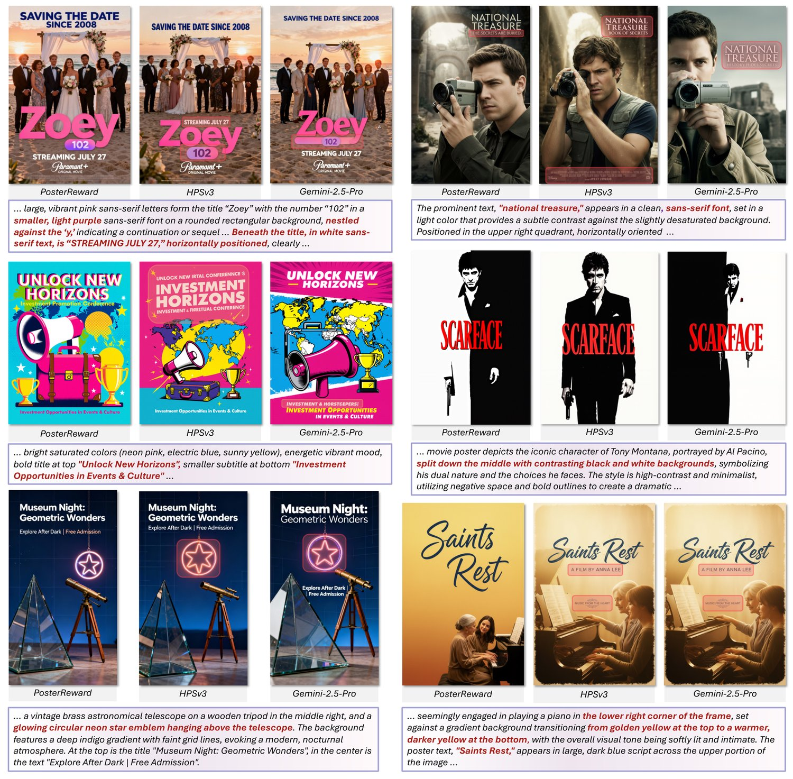
图 8：使用 Best-of-8（Bo8）选择的测试时扩展结果。比较 PosterReward、HPSv3 与 Gemini-2.5-Pro 在海报挑选上的表现。PosterReward 对文字与版式质量的评估更为准确，避免了其他模型中出现的打分失效与位置偏差。
We investigate the feasibility of using PosterReward for poster selection. Based on the poster data generated by various models in the PosterBench benchmark, we selected several samples and apply Test-Time-Scaling via Best-of-8 (Bo8) selection. The results are presented in Figure 8.
我们考察了用 PosterReward 做海报挑选的可行性。基于 PosterBench 基准中各模型生成的海报数据，我们选取若干样本，通过 Best-of-8（Bo8）选择实现测试时扩展，结果见图 8。
As illustrated in the figure, PosterReward demonstrates a more accurate assessment of the poster content. Compared to HPSv3[31], PosterReward can more precisely evaluate text accuracy and layout requirements, showing a significant advantage in graphic design scenarios. UnifiedReward[45] is unsuitable for Bo8 selection, as it frequently produces identical scores for different candidates, making it difficult to distinguish the best one. We also attempted Bo8 selection using Multi-modal Large Language Models (MLLMs), which involved providing multiple images as input and prompting the model to identify the index of the optimal one. Our experiments indicate that the MLLMs struggle to make accurate choices among several visually similar images. Furthermore, we observe that even state-of-the-art proprietary MLLMs exhibit position bias[39, 26] when selecting among multiple similar images. Taking Gemini-2.5-Pro[6] as an example, when the first image in a sequence is of sufficient quality, the model demonstrates a tendency to select it, with its Chain-of-Thought (CoT) predominantly focusing on justifying the first image as the optimal candidate. The prompt for using MLLM for Bo8 selection is shown in Figure 14.
如图所示，PosterReward 对海报内容的评估更为准确。与 HPSv3[31] 相比，PosterReward 能更精确地评判文字准确性与版式要求，在平面设计场景中优势明显。UnifiedReward[45] 不适合用于 Bo8 选择，因为它经常给不同候选打出完全相同的分数，难以区分最优者。我们也尝试用多模态大语言模型（MLLM）做 Bo8 选择，即输入多张图像并让模型指出最优图像的编号。实验表明，MLLM 难以在若干视觉上相近的图像中做出准确选择。此外我们发现，即便是当前最优的商用 MLLM，在多张相似图像中做选择时也会出现位置偏差[39, 26]。以 Gemini-2.5-Pro[6] 为例，当序列中第一张图像质量尚可时，模型倾向于选择它，其思维链（CoT）也主要围绕论证第一张图像最优展开。MLLM 用于 Bo8 选择的提示词见图 14。
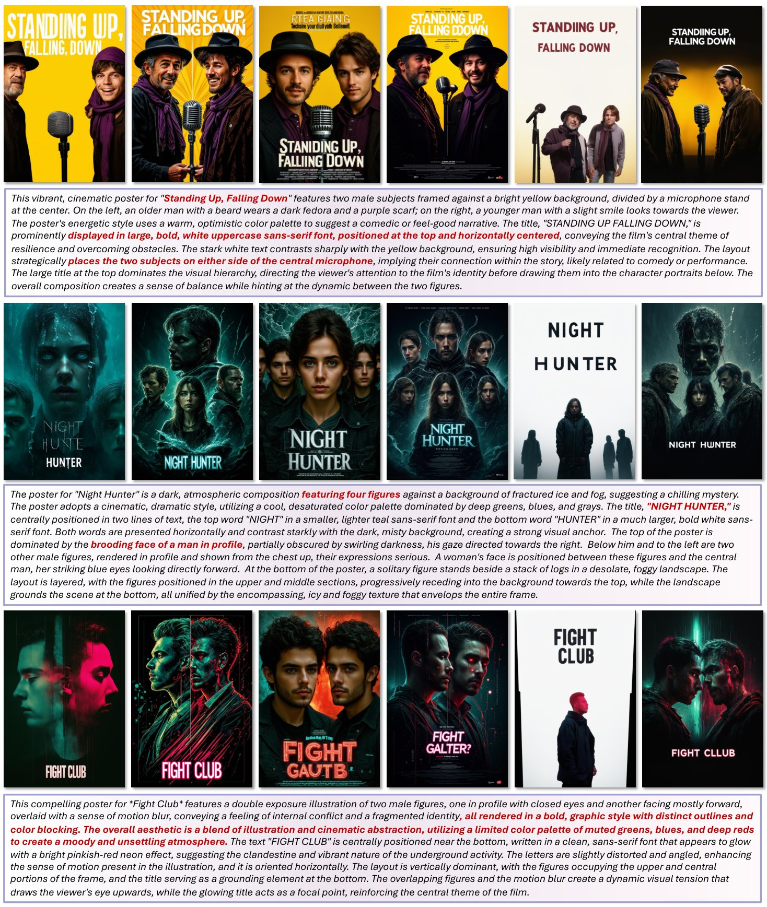
图 9：用不同奖励模型微调 SD3.5-Medium 的视觉对比（第一部分）。从左至右各列依次为原始 SD3.5-Medium，以及用 PosterReward、HPSv3、UnifiedReward、PaddleOCR 和 UnifiedReward + PaddleOCR 组合微调后的模型输出。对应提示词置于底部紫色框内。
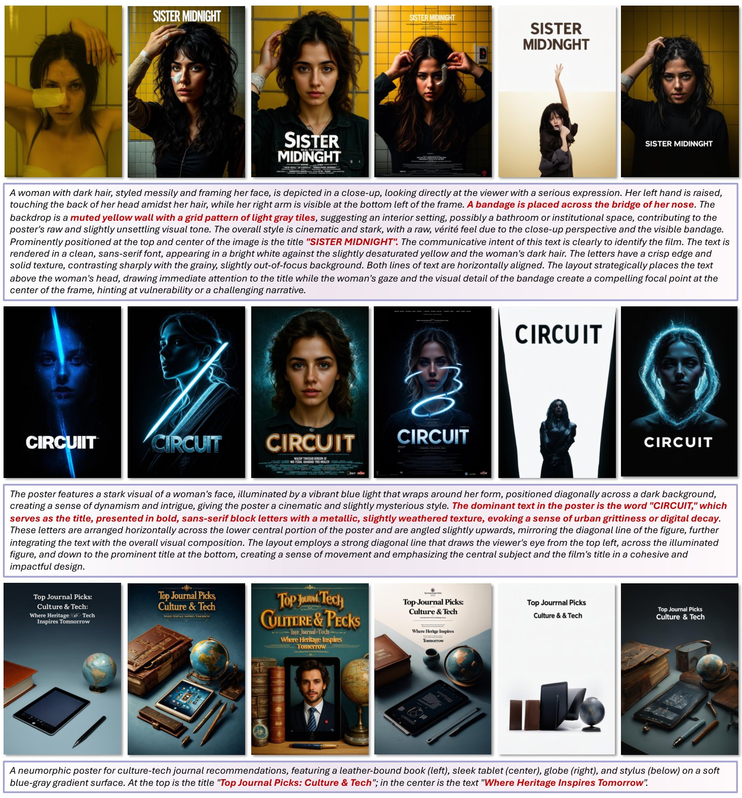
图 10：用不同奖励模型微调 SD3.5-Medium 的视觉对比（第二部分）。与上图一致，各列依次代表原始 SD3.5-Medium、PosterReward、HPSv3、UnifiedReward、PaddleOCR 以及联合的 UnifiedReward + PaddleOCR。文本提示词置于底部紫色框内。
图 11：PosterReward 与不同基线对比的用户研究结果。评估覆盖四个维度：美学、构图、文字准确性与整体偏好。柱状条表示用 PosterReward 微调的模型相对 SD3.5-M、HPSv3、UnifiedReward 与 PaddleOCR[7] 的胜（紫）、平（灰）、负（红）比率。PosterReward 在多数指标上保持一致的偏好优势。
With the increasing prevalence of post-training reinforcement learning (RL) in image generation, numerous evaluation models have been adopted as reward models to furnish optimization signals. Consequently, we evaluate the efficacy of RL utilizing PosterReward. We select DiffusionNFT[59] as our reinforcement learning paradigm. Unlike conventional Policy Gradient methods that discretize the reverse sampling process, DiffusionNFT optimizes the diffusion model directly on the forward process via the flow matching objective. It contrasts positive and negative generations to define an implicit policy improvement direction, naturally incorporating reinforcement signals into a supervised learning objective:
随着后训练强化学习（RL）在图像生成中日益普及，众多评估模型被用作奖励模型以提供优化信号。因此，我们评估了使用 PosterReward 做强化学习的效果。我们选择 DiffusionNFT[59] 作为强化学习范式。与将逆采样过程离散化的传统策略梯度方法不同，DiffusionNFT 通过流匹配目标直接在前向过程上优化扩散模型，通过对比正负样本来定义隐式的策略改进方向，把强化信号自然纳入监督学习目标：
| (6) |
where and denote the implicit positive and negative velocities, respectively. This formulation enables efficient optimization compatible with arbitrary black-box solvers without requiring likelihood estimation.
其中 与 分别表示隐式的正、负速度场。这一形式可以高效优化，兼容任意黑盒求解器，无需似然估计。
We benchmark against reward models including HPSv3[31] and UnifiedReward-Qwen-7B. Both output scalar scores, representing state-of-the-art discriminative and generative reward paradigms, respectively. Furthermore, given our specific focus on poster and graphic design, we incorporate PaddleOCR as a reward model; it provides signals by evaluating the Levenshtein edit distance between the recognized text and the ground-truth text required for rendering. We employ Stable Diffusion 3.5 Medium (SD3.5-M) as the base model. The fine-tuning process utilizes 8 NVIDIA A100 GPUs, with an additional 4 A100 GPUs dedicated to reward model deployment. All training hyperparameters adhere to the original DiffusionNFT configuration. We select the model fine-tuned for 350 steps for evaluation. For the original SD3.5-M model, we followed the setting of CFG=4.5, while for the fine-tuned model, we used CFG=1.0. The seed used during generation is always fixed at 0.
我们与 HPSv3[31]、UnifiedReward-Qwen-7B 等奖励模型做对比，二者都输出标量分数，分别代表判别式与生成式奖励范式的当前最优水平。此外，鉴于我们聚焦海报与平面设计，还引入 PaddleOCR 作为奖励模型：它通过计算识别文本与待渲染真值文本之间的 Levenshtein 编辑距离来提供信号。基座模型选用 Stable Diffusion 3.5 Medium（SD3.5-M）。微调过程使用 8 张 NVIDIA A100 GPU，另配 4 张 A100 用于部署奖励模型。所有训练超参数沿用 DiffusionNFT 原始配置。我们选取微调 350 步的模型进行评估。原始 SD3.5-M 采用 CFG=4.5 的设置，微调模型则使用 CFG=1.0。生成时随机种子始终固定为 0。
We present a comprehensive evaluation of SD3.5-M optimized by various reward models, with visual comparisons detailed in Figure 9 and Figure 10, and quantitative user study results summarized in Figure 11. Regarding text accuracy, although HPSv3[31] and UnifiedReward[45] effectively improve the rendering of key headlines, they inadvertently introduce a substantial amount of illegible small text—resembling “credit blocks”—which severely compromises the overall visual coherence. In contrast, PosterReward significantly elevates text rendering quality while effectively preventing the generation of redundant content. Furthermore, while incorporating PaddleOCR[7] as a fine-tuning signal yields higher character recognition accuracy, it compromises textual aesthetics (e.g., font style and integration) and exhibits a lower success rate when handling complex, multi-text rendering scenarios. In terms of aesthetics and composition, PosterReward provides superior and more precise reward signals, whereas HPSv3 underperforms in both dimensions. While UnifiedReward exhibits a relatively high standard of aesthetics and composition, its scores are diminished by text accuracy defects and a noticeable reduction in image realism. Additionally, the dual-reward model combining PaddleOCR and UnifiedReward marginally sacrifices aesthetic and compositional quality to prioritize text correctness. Consequently, in terms of overall preference, the model fine-tuned with PosterReward successfully outperforms all competitors, demonstrating its capability to provide high-quality, holistic reward signals for poster generation tasks.
我们对用不同奖励模型优化的 SD3.5-M 做了全面评估，视觉对比见图 9 与图 10，定量用户研究结果汇总于图 11。在文字准确性方面，HPSv3[31] 与 UnifiedReward[45] 虽能有效改善主标题的渲染，却会引入大量难以辨认的小字——类似「演职员表块」，严重破坏整体视觉连贯性。相比之下，PosterReward 显著提升了文字渲染质量，并有效避免了冗余内容的生成。此外，引入 PaddleOCR[7] 作为微调信号虽能提高字符识别准确率，却损害了文字的美感（如字体风格与融合度），在处理复杂多文本渲染场景时成功率也更低。在美学与构图方面，PosterReward 提供了更优、更精确的奖励信号，而 HPSv3 在这两个维度上均表现不佳。UnifiedReward 的美学与构图水准相对较高，但其分数被文字准确性缺陷和图像真实感明显下降所拖累。同时，PaddleOCR 与 UnifiedReward 组合的双奖励模型为优先保证文字正确，略微牺牲了美学与构图质量。因此在整体偏好上，用 PosterReward 微调的模型成功超越了所有对比方法，证明其能为海报生成任务提供高质量的整体奖励信号。
In the preference data pipeline, we employ four Multimodal Large Language Models (MLLMs): GLM-4.5v[41], GPT-5, Gemini-2.5-Flash-lite, and Gemini-2.5-Pro. The “Thinking” mode is activated for all models; specifically, for the Gemini-2.5-Flash-lite and Gemini-2.5-Pro, the thinking budget is set to 4096. Regarding sampling parameters, the temperature is set to 1.0 for GPT-5, while a value of 0.7 is maintained for the remaining models. The specific prompts utilized for ranking and preference judgment are presented in Figure 19, Figure 20 and Figure 21.
在偏好数据流程中，我们使用了四个多模态大语言模型（MLLM）：GLM-4.5v[41]、GPT-5、Gemini-2.5-Flash-lite 与 Gemini-2.5-Pro。所有模型均开启「思考」模式，其中 Gemini-2.5-Flash-lite 与 Gemini-2.5-Pro 的思考预算设为 4096。采样参数方面，GPT-5 的温度设为 1.0，其余模型保持 0.7。排序与偏好判断所用的具体提示词见图 19、图 20 与图 21。
We employ Gemini-2.5-Pro to annotate data for both single-image analysis and the collection of paired-image preference Chain-of-Thought (CoT) sequences required for fine-tuning. The detailed prompts utilized for these tasks are presented in Figure 15 and Figure 16. Specifically, during the acquisition of preference CoTs, we explicitly provide the ground-truth preference labels to the model, instructing it to articulate the reasoning behind the selection.
我们用 Gemini-2.5-Pro 为单图分析以及微调所需的成对图像偏好思维链（CoT）序列标注数据，相关提示词详见图 15 与图 16。具体地，在采集偏好 CoT 时，我们向模型显式提供偏好的真值标签，并要求它阐述做出该选择的理由。
To evaluate the visual quality and semantic alignment of the generated movie posters, we employed a multi-round ranking strategy utilizing the Gemini-2.5-Flash-lite multimodal large language model. Given the stochastic nature of Large Language Models (LLMs), a single inference may not accurately reflect the model’s stable preference. Therefore, for each creative brief, we presented a set of candidate images to the model and instructed it to rank them from best to worst based on specific criteria (e.g., prompt adherence, aesthetic quality, and text rendering). This process was repeated times independently to obtain a distribution of rankings.
为评估生成电影海报的视觉质量与语义对齐程度，我们采用基于 Gemini-2.5-Flash-lite 多模态大语言模型的多轮排序策略。鉴于大语言模型（LLM）具有随机性，单次推理未必能反映模型稳定的偏好。因此，对每条创意简报，我们向模型呈现 张候选图像，要求它依据特定标准（如提示词遵循度、美学质量与文字渲染）从优到劣排序。该过程独立重复 次，得到排序的分布。
To quantify the reliability and consistency of the model’s rankings across these iterations, we calculated Kendall’s Coefficient of Concordance (Kendall’s )[17]. Kendall’s is a non-parametric statistic that assesses agreement among raters—in this context, the distinct inference rounds acts as pseudo-raters.
为量化模型在这 轮排序中的可靠性与一致性，我们计算了 Kendall 和谐系数（Kendall's ）[17]。Kendall's 是一种非参数统计量，用于衡量评分者之间的一致程度——在这里，各次独立推理轮次充当伪评分者。
Let be the number of images (items) and be the number of ranking rounds (raters). Let denote the rank assigned to the -th image in the -th round, where . The sum of ranks, , given to the -th image is calculated as:
设 为图像（条目）数量， 为排序轮次（评分者）数量。记 为第 轮赋予第 张图像的名次，其中 。第 张图像所得名次之和 计算如下：
| (7) |
The mean of the sum of ranks, , is given by:
名次之和的均值 为：
| (8) |
Kendall’s is defined as the ratio of the observed sum of squared deviations () to the maximum possible sum of squared deviations. First, we calculate :
Kendall's 定义为观测到的离差平方和（）与最大可能离差平方和之比。首先计算 ：
| (9) |
Assuming no ties in the rankings, Kendall’s is computed as:
假设排序中不存在并列，Kendall's 按下式计算：
| (10) |
The value of ranges from 0 to 1, where indicates complete agreement across all ranking rounds (implying the model’s preference is highly stable), and indicates no agreement. We utilize this metric to filter out instances where the model hallucinates or fails to distinguish quality differences effectively, thereby ensuring the robustness of the final averaged ranking.
的取值在 0 到 1 之间， 表示各轮排序完全一致（说明模型偏好高度稳定）， 表示完全不一致。我们用该指标滤除模型产生幻觉或无法有效区分质量差异的样本，从而保证最终平均排序的稳健性。
To further guarantee the robustness of the constructed preference pairs and mitigate the potential biases inherent to a single evaluator, we implemented a rigorous multi-model verification pipeline. We employed an ensemble of three state-of-the-art multimodal large language models: Gemini-2.5-Pro, GPT-5, and GLM-4.5v.
为进一步保证所构建偏好对的稳健性、缓解单一评估者固有的偏差，我们实施了严格的多模型校验流程，集成 Gemini-2.5-Pro、GPT-5 与 GLM-4.5v 三个当前最优的多模态大语言模型。
Addressing the phenomenon of position bias—where models may exhibit a systematic preference for the first or second image in a sequence—we adopted a bidirectional evaluation strategy. For every candidate pair , each of the three models performed the evaluation twice: once with the original order and once with the image order swapped (i.e., ). This procedure yields a total of six independent assessments per sample. In each assessment, the models were tasked with a holistic evaluation covering fundamental integrity, typographical precision, and artistic quality, classifying the relationship as a clear preference, a tie, or a rejection of both images. This ensemble approach allows us to quantify the confidence level of each preference label based on the consensus among the six judgments.
针对位置偏差（模型可能对序列中第一张或第二张图像表现出系统性偏好）这一现象，我们采用双向评估策略。对每个候选对 ，三个模型各评估两次：一次按原始顺序，一次交换图像顺序（即 ）。这样每个样本共得到六次独立评估。每次评估中，模型需从基础完整性、字体排印精度与艺术质量等方面做整体判断，并把两者的关系判定为明确偏好、平局或两者皆差。这种集成方法使我们能够依据六次判断的共识程度，量化每个偏好标签的置信水平。
表 6：不同筛选标准下的数据集质量分析。N 表示样本数量。Corr.、Err. 与 Controv. 分别表示被判定为正确、错误与有争议的样本百分比。
| Method | N | Corr. (%) | Err. (%) | Controv. (%) |
| All Correct | 20K | 87.2 | 4.6 | 8.2 |
| 5 Correct + 1 Tie | 33K | 85.0 | 5.8 | 9.2 |
| 5 Correct + 1 Tie/Error | 70K | 78.6 | 10.7 | 10.7 |
To compare the reliability of our automated annotation framework under different filtering conditions, we manually annotate and analyze a subset of 1,000 samples from PosterPreference-70K. As described in Section 3, the final filtering stage involves three models, each performing two evaluations with the image order swapped, resulting in a total of six assessments per sample. We investigate three filtering strategies with varying levels of stringency: (1) retaining samples where all six model assessments are unanimous; (2) retaining samples with at least five consistent preference assessments, allowing for one tie; and (3) retaining samples with unanimous preference, allowing for one tie or one conflicting assessment. These samples are then annotated by four human experts and categorized into three groups: Correct, where the preference aligns with at least three annotators; Error, where the preference contradicts at least three annotators; and Controversial for all other cases.
为比较自动标注框架在不同筛选条件下的可靠性，我们从 PosterPreference-70K 中抽取 1000 个样本进行人工标注分析。如第 3 节所述，最终筛选阶段由三个模型参与，每个模型在交换图像顺序的情况下各评估两次，因此每个样本共六次评估。我们考察严格程度不同的三种筛选策略：(1) 保留六次模型评估完全一致正确的样本；(2) 保留至少五次偏好判断一致、允许一次平局的样本；(3) 保留偏好判断一致、允许一次平局或一次冲突判断的样本。随后由四名人类专家对这些样本标注，并归入三类：正确（偏好与至少三名标注者一致）、错误（偏好与至少三名标注者相悖），其余情况为有争议。
As shown in Tab. 6, while the consistency between the automated filtering and human evaluations naturally decreases as the criteria become less stringent, the 5 Correct + 1 Tie/Error strategy still maintains a robust alignment rate of 78.6%, with a relatively low error rate of 10.7%. This indicates that even under a slightly more relaxed filtering threshold, the data quality remains within an acceptable range for effective preference learning. Consequently, we elect to utilize the full 70K dataset for training. We posit that the significant increase in sample diversity and volume (from 20K/33K to 70K) outweighs the marginal gain in precision offered by stricter filtering, as larger-scale datasets typically drive better generalization capabilities in reward modeling. This 70K dataset is subsequently combined with a 100K preference pair subset from HPDv3 to form our final training corpus.
如表 6 所示，随着筛选标准放宽，自动筛选与人工评估的一致率自然会下降，但「5 次正确 + 1 次平局/错误」策略仍保持 78.6% 的稳健一致率，错误率也仅为 10.7%，相对较低。这说明即便筛选阈值略微放宽，数据质量仍处于有效偏好学习的可接受范围。因此我们选用完整的 70K 数据集进行训练。我们认为，样本多样性与数量大幅增加（从 20K/33K 增至 70K）所带来的收益，超过了更严格筛选带来的精度微增，因为更大规模的数据集通常能带来更好的奖励模型泛化能力。该 70K 数据集随后与 HPDv3 中的 10 万偏好对子集组合，构成最终训练语料。
表 7：数据集组件消融实验。我们比较使用部分（33K）与完整（70K）PosterPreference（PP）数据的影响，分别考察其单独使用及与 HPDv3 组合的情况。所有数值均为准确率（）。
| Training Dataset Combination | HPDv3 | PRB-Ad | PRB-Basic |
| PosterPreference-33K (Ours) | 63.0 | 84.9 | 81.9 |
| PosterPreference-70K (Ours) | 63.9 | 84.6 | 83.0 |
| HPDv3-100K | 75.8 | 34.1 | 57.0 |
| HPDv3 + PP-33K | 76.9 | 84.5 | 80.8 |
| HPDv3 + PP-70K (Final) | 77.1 | 85.0 | 83.9 |
To validate our dataset selection strategy and quantify the contribution of different data sources, we conducted comprehensive ablation studies. Specifically, we investigate the performance of reward models trained on five distinct dataset configurations: (1) The high-consistency subset of our domain-specific dataset (PP-33K); (2) The full filtered domain-specific dataset (PP-70K); (3) The general aesthetic preference dataset (HPDv3-100K); (4) A combination of HPDv3 and the high-consistency subset (HPDv3 + PP-33K); and (5) A combination of HPDv3 and the full domain dataset (HPDv3 + PP-70K). We evaluated these models on the general HPDv3 test set as well as our domain-specific benchmarks, PRB-Ad and PRB-Basic.
为验证数据集选择策略并量化不同数据来源的贡献，我们开展了系统的消融实验。具体地，我们考察在五种数据集配置下训练的奖励模型性能：(1) 领域专用数据集的高一致性子集（PP-33K）；(2) 完整筛选后的领域专用数据集（PP-70K）；(3) 通用美学偏好数据集（HPDv3-100K）；(4) HPDv3 与高一致性子集的组合（HPDv3 + PP-33K）；(5) HPDv3 与完整领域数据集的组合（HPDv3 + PP-70K）。我们在通用 HPDv3 测试集以及领域专用基准 PRB-Ad 与 PRB-Basic 上评估这些模型。
As presented in Table 7, models trained solely on domain-specific data (PP-33K/70K) perform well on poster-related benchmarks but show limited generalization on the general HPDv3 test set. Conversely, training exclusively on HPDv3 yields strong general aesthetic judgment but suboptimal performance on poster-specific tasks (PRB-Ad/Basic), indicating a domain gap.
如表 7 所示，仅在领域专用数据（PP-33K/70K）上训练的模型在海报相关基准上表现良好，但在通用 HPDv3 测试集上泛化能力有限。反之，只用 HPDv3 训练的模型具备较强的通用美学判断力，却在海报专用任务（PRB-Ad/Basic）上表现欠佳，说明存在领域鸿沟。
Crucially, combining the general and domain-specific datasets yields significant performance gains. Comparing the two combined settings, the model trained with the full PP-70K dataset consistently outperforms the one trained with the smaller PP-33K subset across all benchmarks. We also noted that the performance improvement was particularly significant on the out-of-domain test set PRB-Basic, indicating that more samples are beneficial for improving the generalization ability of the reward model. This empirical evidence supports our hypothesis in Section 3 that the benefits of increased data scale and diversity in the 70K dataset outweigh the marginal improvements in label consistency found in the 33K subset. Consequently, the HPDv3 + PP-70K configuration is adopted as our final training set, achieving the best balance between general aesthetic understanding and domain-specific expertise.
关键在于，把通用数据集与领域专用数据集结合会带来显著的性能增益。比较两种组合设置，用完整 PP-70K 数据集训练的模型在所有基准上都一致优于用较小 PP-33K 子集训练的模型。我们还注意到，在分布外测试集 PRB-Basic 上性能提升尤为明显，说明更多样本有助于提升奖励模型的泛化能力。这一实证结果支持了第 3 节的假设：70K 数据集在数据规模与多样性上的收益，超过了 33K 子集在标签一致性上的边际改善。因此，我们采用 HPDv3 + PP-70K 配置作为最终训练集，在通用美学理解与领域专用专长之间取得了最佳平衡。
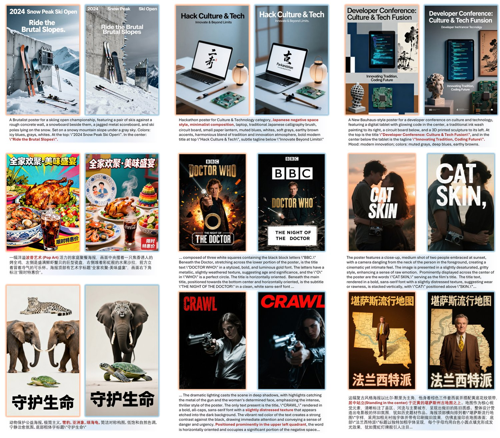
图 12：PosterRewardBench-Advanced 的偏好对样本。该子集由 Seedream 与 Qwen-Image-Lighting 生成的图像组成，包含复杂的海报版式，支持中英文文字渲染评估。每组左侧为选中图像，右侧为拒绝图像，底部显示提示词节选。
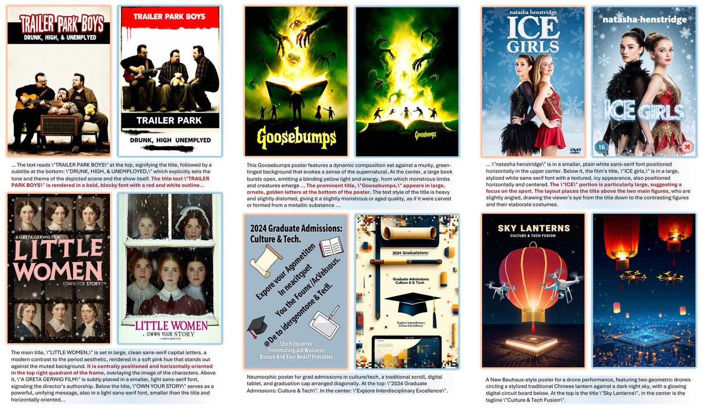
图 13：PosterRewardBench-Basic 的偏好对样本。该子集由 Flux.1 与 SD3.5 模型生成的图像组成。受模型能力限制，该基准只关注英文文字渲染与常规平面设计。每组左侧为选中图像，右侧为拒绝图像，底部显示提示词节选。
All experimental stages are conducted within the MS-Swift framework. We utilize DeepSpeed Zero-3 for Joint Supervised Fine-Tuning (Stage 1), Joint Rejection Sampling Fine-Tuning (Stage 2), and GRPO Fine-Tuning (Stage 4), while Zero-2 is employed for Scoring Module Training (Stage 3). Regarding hyperparameters, we set the per-device batch size to 1 with 2 gradient accumulation steps for the first two stages. For Stage 3, the batch size is set to 4 with 2 accumulation steps, whereas the GRPO stage uses a batch size of 1 with 8 accumulation steps. The adamw_torch optimizer is consistently applied across all stages.
所有实验阶段均在 MS-Swift 框架下完成。联合监督微调（阶段 1）、联合拒绝采样微调（阶段 2）与 GRPO 微调（阶段 4）使用 DeepSpeed Zero-3，打分模块训练（阶段 3）使用 Zero-2。超参数方面，前两个阶段单设备批大小设为 1、梯度累积步数为 2；阶段 3 批大小为 4、累积步数为 2；GRPO 阶段批大小为 1、累积步数为 8。各阶段统一采用 adamw_torch 优化器。
PosterRewardBench. The PosterRewardBench comprises a total of 1,740 preference pairs. Specifically, PosterRewardBench-Advanced contains 1,223 pairs derived from Seedream 3.0, Seedream 4.0, and Qwen-Image-Lighting, while PosterRewardBench-Basic consists of 517 pairs sourced from Flux.1-dev, Flux.1-Krea-dev, and SD3.5-M. Within the Advanced subset, 488 pairs () feature Chinese prompts and font rendering instructions, with the remainder comprising English counterparts. Conversely, given the incompatibility of Flux and SD3.5 with the Chinese language, PosterRewardBench-Basic consists exclusively of English prompts. These pairs have been filtered from initial pools of 1,500 and 600 raw pairs, respectively. Four professional annotators evaluate preferences across multiple dimensions, and we retain only those pairs where at least three annotators reach a consensus. The data collection process spans approximately eight working days, with sample pairs illustrated in Figure 12 and Figure 13. In the pairwise evaluation, to verify decision stability regarding input order, we perform assessments with the “Chosen” image positioned both first and last. The specific prompts utilized are detailed in Figure 18. We also provide the prompt used by the analysis module when performing single-image analysis, as shown in Figure 17.
PosterRewardBench。PosterRewardBench 共包含 1740 个偏好对。其中 PosterRewardBench-Advanced 有 1223 对，来自 Seedream 3.0、Seedream 4.0 与 Qwen-Image-Lighting；PosterRewardBench-Basic 有 517 对，来自 Flux.1-dev、Flux.1-Krea-dev 与 SD3.5-M。在 Advanced 子集中，有 488 对（）包含中文提示词与字体渲染指令，其余为英文对应项。相反，由于 Flux 与 SD3.5 不支持中文，PosterRewardBench-Basic 全部由英文提示词构成。这些偏好对分别从 1500 与 600 个原始对中筛选而来。四名专业标注者从多个维度评估偏好，我们只保留至少三人达成一致的配对。数据采集过程历时约八个工作日，样本对见图 12 与图 13。在成对评估中，为验证模型对输入顺序的决策稳定性，我们把「选中」图像分别置于首位与末位各评估一次。具体提示词见图 18。我们还给出了分析模块执行单图分析时使用的提示词，见图 17。
PosterBench. The PosterBench evaluation dataset consists of 250 prompts randomly sampled from PosterRewardBench, stratified into 100 cinematic and 150 non-cinematic themes. To rigorously assess compositional generalization, we employ distinct resolution strategies for each category. All cinematic prompts are standardized to a fixed vertical resolution of pixels (approximate aspect ratio of ), reflecting conventional movie poster standards. Conversely, the non-cinematic subset is designed to test adaptability to diverse geometries; each of the 150 prompts is assigned a unique target resolution derived from its corresponding reference ground truth. Crucially, while target aspect ratios vary significantly between different prompts—spanning landscape, portrait, and square formats—the target resolution for any specific prompt remains constant across all evaluated models, ensuring a consistent baseline for comparative analysis.
PosterBench。PosterBench 评测数据集由从 PosterRewardBench 中随机抽样的 250 条提示词组成，按 100 个影视主题与 150 个非影视主题分层。为严格考察构图泛化能力，我们对两类主题采用不同的分辨率策略：所有影视类提示词统一为固定的纵向分辨率 像素（宽高比约为 ），符合电影海报的通行标准；非影视子集则用于检验模型对多样几何形状的适应能力，150 条提示词各自由对应的参考真值导出唯一的目标分辨率 。关键在于，虽然不同提示词之间的目标宽高比差异很大（涵盖横版、竖版与方形），但对任一特定提示词，其目标分辨率在所有参评模型中保持恒定，从而为对比分析提供一致的基线。
Implementation of these target resolutions varies by model accessibility. Open-weights models (e.g., Qwen-Image[47], Flux[20]) are conditioned to generate images at the exact target dimensions without resizing. However, for proprietary APIs with discrete resolution constraints, we employ an adaptive mapping strategy to approximate the target geometry. For Nano-Banana[8], arbitrary target dimensions are mapped to the nearest supported aspect ratio (e.g., ). Similarly, for GPT-Image-1, targets are bucketed into three presets: portrait () if the aspect ratio , landscape () if , and square () otherwise. This approach minimizes distortion while ensuring that closed-source models adhere
目标分辨率的具体实施方式因模型的可获取性而异。Qwen-Image[47]、Flux[20] 等开放权重模型被条件化为直接按精确目标尺寸 生成图像，不做缩放。而对于具有离散分辨率约束的商业 API，我们采用自适应映射策略来逼近目标几何形状：对 Nano-Banana[8]，把任意目标尺寸映射到最接近的受支持宽高比（如 ）；对 GPT-Image-1，则把目标分入三档预设——若宽高比 则为竖版（），若 则为横版（），否则为方形（）。该方式在尽量减小形变的同时，保证闭源模型遵循
Despite the promising results achieved by our framework, several limitations remain to be addressed.
尽管本框架取得了令人鼓舞的结果，仍有若干局限有待解决。
First, regarding the inherent position bias in MLLMs, we currently mitigate this issue in pairwise comparisons through a data balancing strategy. However, this strategy is not easily scalable to multi-image evaluation scenarios (e.g., ranking a batch of images simultaneously), where the combinatorial complexity of position swapping becomes prohibitive. Future work will focus on exploring more robust mechanisms to enhance the reliability and consistency of MLLMs in multi-image assessment tasks, reducing the dependency on permutation-based data augmentation.
第一，关于 MLLM 固有的位置偏差，目前我们通过数据均衡策略在成对比较中缓解该问题。然而，这一策略难以扩展到多图评估场景（例如同时对一批图像排序），因为位置交换的组合复杂度会变得难以承受。未来工作将探索更稳健的机制，提升 MLLM 在多图评估任务中的可靠性与一致性，减少对基于排列的数据增强的依赖。
Second, our proposed two-stage reward model, while offering superior interpretability and accuracy, entails a higher computational cost compared to standard discriminative reward models. The requirement for two inference steps inherently limits the model’s real-time inference efficiency. In future research, we aim to optimize this architectural pipeline to reduce computational overhead. Additionally, we plan to conduct a comprehensive analysis of model scaling to investigate how different model sizes impact the trade-off between performance and efficiency in multimodal preference learning.
第二，我们所提出的两阶段奖励模型虽具备更优的可解释性与准确性，但相较于标准判别式奖励模型计算开销更高：需要两次推理，本质上限制了模型的实时推理效率。未来研究将优化这一架构流程以降低计算开销。此外，我们计划对模型规模做系统分析，考察不同模型尺寸如何影响多模态偏好学习中性能与效率之间的权衡。
MLLM Bo8 Prompt The following eight images were all generated by this Prompt:
MLLM Bo8 提示词 以下八张图像均由该提示词生成：
{prompt}
{prompt}
Please compare these images and choose the one you think is the best to submit. Only the image number (1-8) will be returned.
请比较这些图像，选出你认为最适合提交的一张。只返回图像编号（1-8）。
图 14：Best-of-8 选择中用于 MLLM 排序的提示词。
Pointwise Analysis Collection Prompt You are a meticulous AI Image Quality Analyst and Creative Director. Your mission is to provide a detailed, structured analysis for a provided image based on the prompt.
逐点分析采集提示词 你是一位一丝不苟的 AI 图像质量分析师兼创意总监。你的任务是依据提示词对给定图像给出详尽、结构化的分析。
Your Step-by-Step Analysis Process:
你的分步分析流程：
1. Deconstruct the prompt:
First, carefully read and internalize every detail of the provided prompt. Isolate its core components to establish your evaluation criteria.
1. 拆解提示词：首先仔细阅读并内化所提供提示词的每一处细节，拆解其核心构成要素，以此确立评估标准。
2. Structured Image-by-Image Analysis:
For the provided image, you will conduct a methodical evaluation based on the following five criteria. Your analysis MUST address all five points in this specific order, analyzing both compliance and deviation within each point.
2. 结构化的逐图分析：对给定图像，你需依据以下五项标准进行系统评估。你的分析必须按此特定顺序覆盖全部五点，并在每一点中同时分析符合与偏离之处。
1. Fundamental Image Integrity: Assess the image’s foundational technical quality, independent of the prompt’s creative instructions. Scrutinize for any objective flaws such as unintended blur, pixelation, overexposure, underexposure, or digital noise that detract from a professional finish.
• 1. 基础图像完整性：评估图像的基础技术质量，不受提示词创意指令影响。仔细排查任何客观性缺陷，如非预期的模糊、像素化、过曝、欠曝或数字噪点，这些都会损害专业成片质感。
2. AI Artifact and Realism Evaluation: Examine the image specifically for common AI generation artifacts and assess its overall textural fidelity. If characters are present, conduct a rigorous check for anatomical inconsistencies, such as malformed hands, distorted facial features, or unnatural limb positioning. Evaluate whether the image achieves a believable, cohesive sense of realism or if artifacts disrupt the illusion.
• 2. AI 伪影与真实感评估：专门检查图像中常见的 AI 生成伪影，并评估其整体纹理保真度。若画面中有人物，须严格核查解剖结构的一致性，如手部畸形、五官扭曲或肢体位置不自然。判断图像是否达成可信、连贯的真实感，抑或伪影破坏了这种观感。
3. Typographical Precision Analysis: When the prompt includes text, perform a granular analysis of its execution. Evaluate adherence to the specified content, checking for spelling errors, omissions, or additions. Scrutinize the rendering of typographical details: font family, style, color, weight, and capitalization. Assess layout aspects like kerning, leading, alignment, and scale. Conclude by evaluating the overall legibility and seamless integration of the text.
• 3. 字体排印精度分析：当提示词包含文字时，对其执行粒度化的分析。评估内容上的遵循度，检查拼写错误、遗漏或多余内容。细察字体排印细节的渲染：字族、样式、颜色、字重与大小写。评估字距、行距、对齐与比例等版式要素。最后评估文字的整体易读性与融合自然度。
4. Visual Prompt Interpretation: Beyond text, assess the image’s faithfulness to all other thematic and compositional directives in the prompt. Evaluate the accuracy of core elements (characters, objects, setting), the composition, layout, and adherence to the specified artistic style, mood, and color palette. Identify every element that aligns with the brief, as well as any deviations or creative misinterpretations.
• 4. 视觉提示词解读：除文字之外，评估图像对提示词中其他主题性与构图性指令的忠实程度。评估核心元素（人物、物体、场景）、构图、版式，以及对指定艺术风格、氛围与色彩方案的遵循度。指出所有符合简报的要素，以及任何偏离或创意性误读。
5. Standalone Artistic Evaluation: Disregarding the prompt’s specific constraints, judge the image purely on its own artistic and aesthetic merits. Evaluate its composition, use of light and shadow, color theory, emotional impact, and overall visual appeal. Assess the technical execution and the creative choices made, determining if it is a compelling and well-crafted image in its own right.
• 5. 独立艺术评估：抛开提示词的具体约束，纯粹依据图像自身的艺术与美学价值作出判断。评估其构图、光影运用、色彩理论、情感冲击力与整体视觉吸引力。评估技术完成度与所做的创意取舍，判断它本身是否是一张引人入胜、制作精良的图像。
The prompt is as follows:
“{creative_brief}”
提示词如下：「{creative_brief}」
Required Output:
Your final output must be structured as follows. Do not include any conversational introductions or summaries outside of this defined structure.
Provide your structured analysis for the image. Use a clear heading for Image Analysis. Within this analysis, you must use the five numbered subheadings in the specified order.
The total length should be within 500 words.
输出要求：最终输出必须按以下结构组织，不得在该结构之外添加任何对话式开场或总结。请给出你对图像的结构化分析，使用清晰的标题「图像分析」。在该分析中，必须按指定顺序使用五个编号小标题。总长度控制在 500 词以内。
(Example of the final part of the output)
Image Analysis
1. Fundamental Image Integrity:
[Your analysis here.]
…
5. Standalone Artistic Evaluation:
[Your analysis here.]
（输出末段示例）图像分析 1. 基础图像完整性：[此处填入你的分析。] …… 5. 独立艺术评估：[此处填入你的分析。]
图 15：用于逐点分析数据采集的提示词。
Pairwise Preference Reasoning Prompt The images were generated by the prompt: “{prompt}”.
成对偏好推理提示词 这些图像由提示词「{prompt}」生成。
Why is Image {better_image_index} better than Image {worse_image_index}?
为什么图像 {better_image_index} 优于图像 {worse_image_index}？
When analyzing, you can consider these dimensions: Image Quality, AI Artifacts, Prompt Adherence, Text Rendering, and Aesthetic Value. Focus only on the key differentiating factors that make Image {better_image_index} superior. You don’t need to cover all dimensions—only explain the core reasons.
分析时可参考以下维度：图像质量、AI 伪影、提示词遵循度、文字渲染与美学价值。只需聚焦使图像 {better_image_index} 更优的关键差异因素，不必覆盖全部维度，只解释核心原因即可。
Provide your analysis as a single paragraph.
请以单段文字给出你的分析。
图 16：用于成对偏好推理数据采集的提示词。
Pointwise Analysis Generation Prompt
Please analyze this image generated from the prompt: “{creative_brief}”.
Provide a detailed analysis across these five dimensions:
1. Fundamental Image Integrity,
2. AI Artifact and Realism Evaluation,
3. Typographical Precision Analysis,
4. Visual Prompt Interpretation, and
5. Standalone Artistic Evaluation.
逐点分析生成提示词 请分析这张由提示词「{creative_brief}」生成的图像。请围绕以下五个维度展开详细分析：1. 基础图像完整性，2. AI 伪影与真实感评估，3. 字体排印精度分析，4. 视觉提示词解读，5. 独立艺术评估。
图 17：用于逐点分析生成训练与推理的提示词。
Pairwise Preference Prediction Prompt
The following two images are generated from this prompt: “{prompt}”.
Is Image 1 better than Image 2?
Please answer Yes or No first, then provide the reason.
成对偏好预测提示词 以下两张图像由该提示词生成：「{prompt}」。图像 1 是否优于图像 2？请先回答 Yes 或 No，再给出理由。
图 18：用于成对偏好预测训练与推理的提示词。
Multi-Round Ranking Prompt (Part 1) You are a meticulous AI Image Quality Analyst and Creative Director. Your mission is to provide a detailed, structured analysis for {image_ref} based on a creative brief, culminating in a definitive ranking presented in JSON format.
多轮排序提示词（第一部分） 你是一位一丝不苟的 AI 图像质量分析师兼创意总监。你的任务是依据创意简报对 {image_ref} 给出详尽、结构化的分析，并最终以 JSON 格式给出确定的排序。
Your Step-by-Step Analysis Process:
你的分步分析流程：
1. Deconstruct the Creative Brief:
First, carefully read and internalize every detail of the provided prompt. Isolate its core components to establish your evaluation criteria.
1. 拆解创意简报：首先仔细阅读并内化所提供提示词的每一处细节，拆解其核心构成要素，以此确立评估标准。
2. Structured Image-by-Image Analysis:
For each of the {num_images} images, you will conduct a methodical evaluation based on the following five criteria. Your analysis for each image MUST address all five points in this specific order, analyzing both compliance and deviation within each point.
2. 结构化的逐图分析：对 {num_images} 张图像中的每一张，你需依据以下五项标准进行系统评估。你对每张图像的分析必须按此特定顺序覆盖全部五点，并在每一点中同时分析符合与偏离之处。
Crucially, your analysis for each image must be completely independent and self-contained. Do not make comparisons or references to any other image within an individual analysis block (e.g., in the analysis for Image 1, do not mention Image 2). All comparative logic is reserved for the final ranking synthesis.
关键的是，你对每张图像的分析必须完全独立、自足：在单个分析块内不得与其他图像做比较或参照（例如，在图像 1 的分析中不得提及图像 2）。所有比较性逻辑都留给最终的排序综合环节。
1. Fundamental Image Integrity: Assess the image’s foundational technical quality, independent of the prompt’s creative instructions. Scrutinize for any objective flaws such as unintended blur, pixelation, overexposure, underexposure, or digital noise that detract from a professional finish. Conversely, note the image’s strengths in clarity, sharpness, and clean rendering.
• 1. 基础图像完整性：评估图像的基础技术质量，不受提示词创意指令影响。仔细排查任何客观性缺陷，如非预期的模糊、像素化、过曝、欠曝或数字噪点，这些都会损害专业成片质感。相应地，也要指出图像在清晰度、锐度与干净渲染上的长处。
2. AI Artifact and Realism Evaluation: Examine the image specifically for common AI generation artifacts and assess its overall textural fidelity. If characters are present, conduct a rigorous check for anatomical inconsistencies, such as malformed hands, distorted facial features, or unnatural limb positioning. Evaluate whether the image achieves a believable, cohesive sense of realism or if artifacts disrupt the illusion.
• 2. AI 伪影与真实感评估：专门检查图像中常见的 AI 生成伪影，并评估其整体纹理保真度。若画面中有人物，须严格核查解剖结构的一致性，如手部畸形、五官扭曲或肢体位置不自然。判断图像是否达成可信、连贯的真实感，抑或伪影破坏了这种观感。
3. Typographical Precision Analysis: When the prompt includes text, perform a granular analysis of its execution. Evaluate adherence to the specified content, checking for spelling errors, omissions, or additions. Scrutinize the rendering of typographical details: font family, style, color, weight, and capitalization. Assess layout aspects like kerning, leading, alignment, and scale. Conclude by evaluating the overall legibility and seamless integration of the text.
• 3. 字体排印精度分析：当提示词包含文字时，对其执行粒度化的分析。评估内容上的遵循度，检查拼写错误、遗漏或多余内容。细察字体排印细节的渲染：字族、样式、颜色、字重与大小写。评估字距、行距、对齐与比例等版式要素。最后评估文字的整体易读性与融合自然度。
4. Visual Prompt Interpretation: Beyond text, assess the image’s faithfulness to all other thematic and compositional directives in the prompt. Evaluate the accuracy of core elements (characters, objects, setting), the composition, layout, and adherence to the specified artistic style, mood, and color palette. Identify every element that aligns with the brief, as well as any deviations or creative misinterpretations.
• 4. 视觉提示词解读：除文字之外，评估图像对提示词中其他主题性与构图性指令的忠实程度。评估核心元素（人物、物体、场景）、构图、版式，以及对指定艺术风格、氛围与色彩方案的遵循度。指出所有符合简报的要素，以及任何偏离或创意性误读。
5. Standalone Artistic Evaluation: Disregarding the prompt’s specific constraints, judge the image purely on its own artistic and aesthetic merits. Evaluate its composition, use of light and shadow, color theory, emotional impact, and overall visual appeal. Assess the technical execution and the creative choices made, determining if it is a compelling and well-crafted image in its own right.
• 5. 独立艺术评估：抛开提示词的具体约束，纯粹依据图像自身的艺术与美学价值作出判断。评估其构图、光影运用、色彩理论、情感冲击力与整体视觉吸引力。评估技术完成度与所做的创意取舍，判断它本身是否是一张引人入胜、制作精良的图像。
图 19：用于多轮排序数据采集的提示词（第一部分：分析标准）。
Multi-Round Ranking Prompt (Part 2)
3. Synthesize and Establish Ranking Logic:
After analyzing all images, synthesize your findings from the five-point analysis to establish a final ranking from best to worst. Your ranking must be a direct result of weighing your findings against this strict, four-tier hierarchy of importance:
多轮排序提示词（第二部分） 3. 综合并确立排序逻辑：分析完所有图像后，综合五点分析的发现，确立从优到劣的最终排序。你的排序必须建立在把这五项发现与下述严格的四级重要性层级相权衡的基础上：
Priority 1: Fundamental Image Integrity. This is the primary gatekeeper for quality. An image must first be technically sound. Any image with significant fundamental flaws (e.g., pervasive blur, noise, or exposure issues) will be penalized heavily, regardless of its performance in other areas. This is evaluated in point 1.
• 优先级 1：基础图像完整性。这是质量的首要门槛。图像首先必须在技术上过关。任何存在显著基础缺陷（如普遍模糊、噪点或曝光问题）的图像都会被严厉扣分，无论其在其他方面表现如何。这一点在第 1 点评估。
Priority 2: Comprehensive Prompt Adherence. Once an image passes the fundamental quality check, its faithfulness to the creative brief is the next most critical factor. This encompasses both textual accuracy and visual interpretation. Within this tier, accuracy in text is paramount. This is evaluated in point 3 (Typographical Precision) and point 4 (Visual Prompt Interpretation).
• 优先级 2：全面的提示词遵循度。图像通过基础质量检查后，其对创意简报的忠实度是下一个最关键因素，涵盖文字准确性与视觉解读两方面。在这一层级内，文字准确性最为重要。这一点在第 3 点（字体排印精度）与第 4 点（视觉提示词解读）评估。
Priority 3: AI-Generated Artifacts. Images that are technically sound and prompt-adherent are then judged on their level of polish and realism. The absence of distracting AI-specific rendering errors, such as anatomical distortions or illogical object blending, is the third most important factor. This is evaluated in point 2 (AI Artifact and Realism Evaluation).
• 优先级 3：AI 生成伪影。技术上过关且遵循提示词的图像，接下来按精细度与真实感评判。是否存在分散注意力的 AI 特有渲染错误（如解剖结构扭曲或不合逻辑的物体融合），是第三重要的因素。这一点在第 2 点（AI 伪影与真实感评估）评估。
Priority 4: Standalone Aesthetic Appeal. This is the final consideration, used primarily to differentiate between images that perform similarly in the top three tiers. It is a subjective measure of the image’s artistic merit, including composition, lighting, and overall impact. This is evaluated in point 5.
• 优先级 4：独立美学吸引力。这是最后的考量，主要用于区分在前三层表现相近的图像。它是对图像艺术价值的主观衡量，包括构图、布光与整体冲击力。这一点在第 5 点评估。
The Creative Brief (Prompt) is as follows:
“{creative_brief}”
创意简报（提示词）如下：「{creative_brief}」
Required Output:
Your final output must be structured as follows. Do not include any conversational introductions or summaries outside of this defined structure.
First, provide your structured analysis for each of the {num_images} images. Use a clear heading for each image (e.g., Image 1 Analysis). Within each analysis, you must use the five numbered subheadings in the specified order.
Following the analysis of all {num_images} images, provide the final ranking in a single, clean JSON block. The JSON block must be the very last thing in your response and contain only the ranking.
输出要求：最终输出必须按以下结构组织，不得在该结构之外添加任何对话式开场或总结。首先给出对 {num_images} 张图像中每一张的结构化分析，为每张图像使用清晰的标题（如「图像 1 分析」）。在每段分析中，必须按指定顺序使用五个编号小标题。分析完所有 {num_images} 张图像后，以一个单独、干净的 JSON 块给出最终排序。该 JSON 块必须是你回复中的最后一项内容，且只包含排序。
(Example of the final part of the output)
…
Image {num_images} Analysis
1. Fundamental Image Integrity:
[Your analysis here.]
…
5. Standalone Artistic Evaluation:
[Your analysis here.]
（输出末段示例）…… 图像 {num_images} 分析 1. 基础图像完整性：[此处填入你的分析。] …… 5. 独立艺术评估：[此处填入你的分析。]
‘‘‘json
{
"rank": {ranking_example}
}
‘‘‘
*Replace the numbers with the image numbers (1-{num_images}) in order from best to worst.*
*请将数字替换为按从优到劣排列的图像编号（1-{num_images}）。*
图 20：用于多轮排序数据采集的提示词（第二部分：综合与输出）。
MLLM Preference Assessment Prompt System Instruction: You are an AI Image Quality Analyst. Your task is to evaluate a pair of AI-generated images based on a creative brief and determine their data quality.
MLLM 偏好评估提示词 系统指令：你是一位 AI 图像质量分析师。你的任务是依据创意简报评估一对 AI 生成图像，并判断其数据质量。
Evaluation Criteria:
Analyze each image based on its:
评估标准：从以下方面分析每张图像：
Fundamental Image Integrity: Technical quality (clarity, exposure, no major flaws).
1. 基础图像完整性：技术质量（清晰度、曝光、无明显缺陷）。
AI Artifacts and Realism: Presence of AI artifacts, anatomical correctness, overall realism.
2. AI 伪影与真实感：是否存在 AI 伪影、解剖结构正确性、整体真实感。
Typographical Precision: (If text is present) Accuracy of content, font, style, and layout.
3. 字体排印精度：（若存在文字）内容、字体、样式与版式的准确性。
Visual Prompt Interpretation: Faithfulness to the creative brief’s theme, composition, style, and elements.
4. 视觉提示词解读：对创意简报的主题、构图、风格与元素的忠实度。
Standalone Artistic Quality: Aesthetic appeal, composition, lighting, and emotional impact.
5. 独立艺术质量：美学吸引力、构图、布光与情感冲击力。
Decision Task:
Based on a holistic evaluation of the criteria above, you must categorize the image pair into one of the following four options.
决策任务：基于对上述标准的整体评估，你必须把该图像对归入以下四个选项之一。
Output Options:
输出选项：
“Image 1”: If Image 1 is clearly better than Image 2.
• 「图像 1」：若图像 1 明显优于图像 2。
“Image 2”: If Image 2 is clearly better than Image 1.
• 「图像 2」：若图像 2 明显优于图像 1。
“Tie”: If both images are good and of comparable quality.
• 「平局」：若两张图像都不错且质量相当。
“Both are bad”: If both images significantly fail the prompt’s core requirements. This includes, but is not limited to: major errors in text or subject matter, missing key content, severe image quality issues, or extremely low aesthetic value.
• 「两者皆差」：若两张图像都严重不满足提示词的核心要求，包括但不限于：文字或主体出现重大错误、缺失关键内容、严重的图像质量问题，或美学价值极低。
The Creative Brief (Prompt):
创意简报（提示词）：
“{creative_brief}”
「{creative_brief}」
Required Output Format:
Your final output must contain only one of the four decision strings and nothing else. Do not provide analysis, justifications, or any other conversational text.
输出格式要求：最终输出只能包含四个决策字符串之一，不得包含其他内容。不要给出分析、论证或任何对话式文本。
Example:
Image 1
示例：图像 1
图 21：用于 MLLM 成对偏好校验的提示词。该提示词引导模型从五个维度评估图像对，并通过「两者皆差」选项专门滤除低质量样本。